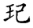

右中国小说史略二十八篇其第一至第十五篇以去年十月中印讫已而于朱彝尊[556]明诗综卷八十知雁宕山樵陈忱字遐心胡适为后水浒传序[557]考得其事尤众于谢无量平民文学之两大文豪[558]第一编知说唐传旧本题庐陵罗本撰粉妆楼相传亦罗贯中作惜得见在后不及增修其第十六篇以下草稿则久置案头时有更定然识力俭隘观览又不周洽不特于明清小说阙略尚多即近时作者如魏子安韩子云辈之名亦缘他事相牵未遑博访况小说初刻多有序跋可借知成书年代及其撰人而旧本希觏仅获新书贾人草率于本文之外大率刊落用以编录亦复依据寡薄时虑讹谬惟更历岁月或能小小妥帖耳而时会交迫当复印行乃任其不备辄付排印顾畴昔所怀将以助听者之聆察释写生之烦劳之志愿则于是乎毕矣一千九百二十四年三月三日校竟记[559]
右《中国小说史略》二十八篇，其第一至第十五篇以去年十月中印讫。已而于朱彝尊《明诗综》卷八十知雁宕山樵陈忱字遐心，胡适为《后水浒传序》考得其事尤众；于谢无量《平民文学之两大文豪》第一编知《说唐传》旧本题庐陵罗本撰，《粉妆楼》相传亦罗贯中作，惜得见在后，不及增修。其第十六篇以下草稿，则久置案头，时有更定，然识力俭隘，观览又不周洽，不特于明清小说阙略尚多，即近时作者如魏子安、韩子云辈之名，亦缘他事相牵，未遑博访。况小说初刻，多有序跋，可借知成书年代及其撰人，而旧本希觏，仅获新书，贾人草率，于本文之外，大率刊落；用以编录，亦复依据寡薄，时虑讹谬，惟更历岁月，或能小小妥帖耳。而时会交迫，当复印行，乃任其不备，辄付排印。顾畴昔所怀将以助听者之聆察、释写生之烦劳之志愿，则于是乎毕矣。一千九百二十四年三月三日校竟记。
[1] 盐谷节山（1878—1962） 盐谷温，字节山，日本汉学家。著有《中国文学概论讲话》等。他在所著《关于明的小说“三言”》一文中，介绍了新发现的元刊全相平话五种及“三言”（载一九二四年日本汉学杂志《斯文》第八编第六号）。“平话五种”及“三言”，分别参看本书第十四篇和第二十一篇。
[2] 论者 指郑振铎。本篇手稿原作：“郑振铎教授之谓当有以朝代为分之小说史，亦殆非肤泛之论也。”
[3] 外国人所作之中国文学史 最早有俄国王西里（В.П.Васильев）《中国文学史纲》（1880年圣彼得堡出版）、日本末松谦澄《中国古文学略史》（1882年东京出版）、英国翟理斯（H.Giles）《中国文学史》（1901年伦敦出版）、德国葛鲁贝（W.Grube）《中国文学史》（1902年莱比锡出版）等。中国人所作者，二十世纪初有林传甲《中国文学史》（1904年编印）、窦警凡《历朝文学史》（1906年出版）、黄人《中国文学史》（1907年陆续出版）等，都不谈或很少论及小说。1918年出版的谢无量《中国大文学史》，全书六十三章，只有六个章节论及小说。
[4] “饰小说以干县令” 语见《庄子·杂篇·外物》。县令，鲁迅《中国小说的历史的变迁》中说：“‘县’是高，言高名；‘令’是美，言美誉。”
[5] 桓谭（前？—56） 字君山，东汉沛国相（今安徽淮北市）人，官至议郎给事中。所撰《新论》，《隋书·经籍志》著录十七卷，已散佚，今存清人辑本。此处所引“小说家合残丛小语”等语，见《文选》卷三十一江淹诗《李都尉》李善注，“残丛”作“丛残”，“譬喻”作“譬论”。
[6] “短书不可用” 《太平御览》卷六〇二引桓谭《新论》：“余为《新论》，术辨古今，亦欲兴治也，何异《春秋》褒贬耶？今有疑者，所谓蚌异蛤、二五非十也。谭见刘向《新序》、陆贾《新语》，乃为《新论》。庄周寓言，乃云：‘尧问孔子’，《淮南子》云：‘共工争帝，地维绝’，亦皆为妄作，故世人多云：‘短书不可用’。然论天间莫明于圣明，庄周等虽虚诞，故当采其善，何云尽弃耶？”按《庄子》，战国庄周撰。《汉书·艺文志》著录五十二篇，今存三十三篇。“尧问孔子”，不见今本《庄子》。《淮南子》，西汉淮南王刘安及其门客编撰。《汉书·艺文志》著录内篇二十一篇，外篇三十三篇，今存内篇。该书《天文训》说：“昔者共工与颛顼争为帝，怒而触不周之山，天柱折，地维绝。天倾西北，故日月星辰移焉；地不满东南，故水潦尘埃归焉。”
[7] 燔灭文章以愚黔首 语见《汉书·艺文志》总序。黔首，唐颜师古注：“秦谓人为黔首，言其头黑也。”
[8] 刘向（约前77—前6） 本名更生，字子政，西汉沛（今江苏沛县）人，官谏大夫、中垒校尉等。曾于天禄阁领校群书，撰成《别录》。原有《刘向集》六卷，已散佚，明人辑有《刘中垒集》。刘歆（？—23），字子骏，官骑都尉、奉车光禄大夫。受诏与父向领校秘书，撰成《七略》。原有《刘歆集》，已散佚，明人辑有《刘子骏集》。《七略》，我国最早的一部目录书，《隋书·经籍志》著录七卷，已散佚，今存清人辑本一卷。
[9] 班固（32—92） 字孟坚，东汉安陵（今陕西咸阳）人，官兰台令史。曾校书秘府，继其父班彪编撰《汉书》共一百卷。其中《艺文志》载：刘歆曾“总群书而奏其《七略》，故有《辑略》，有《六艺略》，有《诸子略》，有《诗赋略》，有《兵书略》，有《术数略》，有《方技略》。今删其要，以备篇籍”。
[10] “可观者九家” 《汉书·艺文志·诸子略》记述十家，指儒家、道家、阴阳家、法家、名家、墨家、纵横家、杂家、农家及小说家，并评论云：“诸子十家，其可观者九家而已。”
[11] 颜师古（581—645） 名籀，唐万年（今陕西西安）人，曾任中书侍郎、秘书少监。精于训诂，以注《汉书》著称。
[12] 《伊尹说》 已散佚。《汉书·艺文志》道家类著录《伊尹》五十一篇，亦已散佚。《玉函山房辑佚书》辑有《伊尹书》一卷，《全上古三代秦汉三国六朝文》辑有伊尹遗文十一则。伊尹，名挚，商初大臣。
[13] 《鬻子说》 已散佚。又道家类著录《鬻子》二十二篇，亦已散佚。《全上古三代秦汉三国六朝文》辑有一卷。鬻子，名熊，《史记·楚世家》称他是周文王时人，周成王封其后裔熊绎于楚蛮，是为楚国之始。
[15] 《青史子》 周青史子撰，已散佚。《隋书·经籍志》《燕丹子》题下附注：“梁有《青史子》一卷，……亡。”鲁迅《古小说钩沉》有辑本。青史子，青史系复姓，古代史官。
[16] 《师旷》 已散佚。又兵阴阳家类著录《师旷》八篇，亦已散佚。师旷，字子野，春秋晋国人，平公臣子，精通音乐。其言论见于《春秋左氏传》、《逸周书》等。
[17] 《务成子》 已散佚。又五行家类著录《务成子灾异应》十四卷，房中家类著录《务成子阴道》三十六卷，均散佚。务成系复姓，名昭，一说名跗。东汉王符《潜夫论·赞学》有“尧师务成”的记载。
[18] 《宋子》 已散佚。《玉函山房辑佚书》辑有一卷。宋子，名，战国时宋国人。参看本书第三篇。
[19] 《天乙》 已散佚。《史记·殷本纪》：“主癸卒，子天乙立，是为成汤。”文中所引“其言者殷时”，《汉书》作“其言非殷时”。下文《黄帝说》、《封禅方说》、《待诏臣饶心术》、《待诏臣安成未央术》、《臣寿周纪》、《虞初周说》、《百家》，亦均散佚。《百家》，刘向编撰。
[20] 《汉书·艺文志》所录小说总数，应为“千三百九十篇”。
[21] “虽小道，必有可观者焉”等句，见《论语·子张》：“子夏曰：‘虽小道，必有可观者焉，致远恐泥，是以君子不为也’。”
[22] 长孙无忌（？—659） 字辅机，唐洛阳（今属河南）人，官至太尉，封赵国公。永徽三年（652）奉命监修《隋书》十志。
[23] 魏征（580—643） 字玄成，唐馆陶（今属河北）人，官至侍中，封郑国公。曾校定秘府图书，贞观三年（629）主持梁、陈、北齐、北周、隋五朝史的编撰工作。按魏征只参与编撰《隋书》纪传部分，《经籍志》系长孙无忌等人编撰。
[24] 荀勖（？—289） 字公曾，晋颍阴（今河南许昌）人。由魏入晋，领秘书监，官至尚书令。他曾据魏郑默《中经》撰成《中经簿》，系继《七略》之后最详尽的目录学著作，现已散佚。据《隋书·经籍志》，《中经簿》分四部：甲部收六艺及小学等书，乙部收古诸子家、近世子家、兵书、兵家、术数，丙部收史记、旧事、皇览簿、杂事，丁部收诗赋、图赞、汲冢书。《隋书·经籍志》即据此将群书分为经、史、子、集四部；但以甲为经、乙为史、丙为子、丁为集，与荀勖所定以乙为子、丙为史有所不同。
[25] 《燕丹子》 作者未详，或言汉人所撰。《隋书·经籍志》著录一卷。内容叙写战国时燕太子丹命荆轲往刺秦王的故事。
[26] 此处“职方氏”应作“训方氏”。据《周礼·夏官》：“训方氏掌道四方之政事，与其上下之志。诵四方之传道，正岁则布而训四方，而观新物”；“职方氏掌天下之图，以掌天下之地”。
[27] 刘昫（887—946） 字耀远，后晋归义（今河北雄县）人，官至太保，曾监修《旧唐书》。韦述（？—757），唐万年（今陕西西安）人，官至工部侍郎。玄宗时曾主修国史。毋煚，唐洛阳（今属河南）人，曾任右率府胄曹参军。参与整理、校订内府图书，与韦述等人重修成《群书四部录》二百卷，后又独自节取该书编成《古今书录》四十卷。
[28] 《汉书·艺文志》除总序外，每部类均有扼要评述，通称小序。据《旧唐书·经籍志序》：“煚等撰集，依班固《艺文志》体例，诸书随部皆有小序，发明其指。”其后《旧唐书》撰者据《古今书录》编撰《经籍志》时，为简略起见，将小序全部删去。
[29] 张华（232—300） 字茂先，晋方城（今河北固安）人。武帝时曾任中书令，后累迁至侍中、司空。所撰《博物志》，《新唐书·艺文志》著录十卷。下文《列异传》，一说魏曹丕撰，已散佚，鲁迅《古小说钩沉》有辑本。参看本书第五篇。
[30] 曾公亮（999—1078） 字明仲，北宋晋江（今属福建）人。曾任史馆修撰，官至同中书门下平章事、集贤殿大学士。他主持《新唐书》编撰工作，书成，由其具名奏进。
[31] 欧阳修（1007—1072） 字永叔，号六一居士，北宋吉安（今属江西）人，官至枢密副使、参知政事。与宋祁合修《新唐书》，所撰有《新五代史》、《欧阳文忠集》。
[32] 戴祚 字延之，晋江东人，曾随刘裕西征姚秦，后任西戎主簿。所撰《甄异传》，《隋书·经籍志》著录三卷，已散佚，鲁迅《古小说钩沉》有辑本。吴筠（469—520），字叔庠，南朝梁故鄣（今浙江安吉）人。官至奉朝请。据《梁书·文学传》、《隋书·经籍志》、两《唐志》，吴筠均作“吴均”。参看本书第五篇。此处所说“志神怪者十五家一百十五卷”，指张华《列异传》一卷，戴祚《甄异传》三卷，袁王寿《古异传》三卷，祖冲之《述异记》十卷，刘质《近异录》二卷，干宝《搜神记》三十卷，刘之遴《神录》五卷，梁元帝《妍神记》十卷，祖台之《志怪》四卷，孔氏《志怪》四卷，荀氏《灵鬼志》三卷，谢氏《鬼神列传》二卷，刘义庆《幽明录》三十卷，东阳无疑《齐谐记》七卷，吴均《续齐谐记》一卷。
[33] 王延秀 南朝宋太原（今属山西）人。曾任尚书郎。所撰《感应传》，《新唐书·艺文志》著录八卷，已散佚；《太平广记》存佚文二则。侯君素，名白字君素，隋魏郡（郡治今河南临漳）人。参看本书第七篇。所撰《旌异记》，《新唐书·艺文志》著录十五卷，已散佚；鲁迅《古小说钩沉》有辑本。此处所说“明因果者九家七十卷”，指王延秀《感应传》八卷，陆果《蒟应验记》一卷，王琰《冥祥记》十卷（《新唐书·艺文志》著录一卷，《隋书·经籍志》和《旧唐书·经籍志》均著录十卷。按九家七十卷，则以十卷为是），王曼颍《续冥祥记》十一卷，刘泳《因果记》十卷，颜之推《冤魂志》三卷，又《集灵记》十卷，无名氏《征应集》二卷，侯君素《旌异记》十五卷。
[34] 李恕 据《新唐书·宰相世系表》，唐代名李恕者有三人，一为陇西郡李晟之子，曾任光禄卿，余二人皆赵郡人。《诫子拾遗》，《新唐书·艺文志》著录四卷，撰者李恕为何人，待考。
[35] 刘孝孙 隋末唐初荆州（治所今湖北江陵）人。太宗时曾任咨议参军、太子洗马。所撰《事始》，《新唐书·艺文志》著录三卷，系刘孝孙、房德懋合撰。据晁公武《郡斋读书志》载，《事始》全书分二十六门，内容系考述事物起源。
[36] 李涪 唐末人。昭宗时曾任国子祭酒、詹事府丞等职。所撰《刊误》，《新唐书·艺文志》著录二卷。书中考究典故，引古制以正唐制之误，下卷兼及杂事。
[37] 陆羽（733—804） 字鸿渐，唐竟陵（今湖北天门）人。长期隐居著述。所撰《茶经》，《新唐书·艺文志》著录三卷，系我国有关茶学的第一部专门著作。
[38] 胡应麟（1551—1602） 字元瑞，号少室山人，明兰溪（今属浙江）人。所撰《少室山房笔丛》，《明史·艺文志》著录三十二卷，又续集十六卷。内容主要为关于经史百家的考据，其中对小说戏曲的评述尤为人所重视。文中所引见于该书第二十九卷。
[39] 《搜神》 即晋干宝《搜神记》；《述异》，即晋祖冲之《述异记》，参看本书第五篇。《宣室》，即唐张读《宣室志》；《酉阳》，即唐段成式《酉阳杂俎》，参看本书第十篇。
[40] 《飞燕》 即宋秦醇《赵飞燕外传》；《太真》，即宋乐史《杨太真外传》，参看本书第十一篇。《崔莺》，即唐元稹《莺莺传》；《霍玉》，即唐蒋防《霍小玉传》，参看本书第九篇。
[41] 《世说》 即南朝宋刘义庆《世说新语》；《语林》，即晋裴启《语林》，参看本书第七篇。《琐言》，即《北梦琐言》，宋孙光宪撰，《宋史·艺文志》著录十二卷，记唐、五代士大夫遗文琐语。《因话》，即《因话录》，唐赵璘撰，《新唐书·艺文志》著录六卷，记唐人遗闻佚事等。
[42] 《容斋》 即《容斋随笔》，宋洪迈撰，《宋史·艺文志》著录五集七十四卷。内容为经史百家以及医卜星算的辩订考据。《梦溪》，即《梦溪笔谈》，宋沈括撰，二十六卷，又《补笔谈》三卷，《续笔谈》一卷。内容涉及史地、科技、艺文等。《东谷》，即《东谷所见》，宋李之彦撰，《宋史·艺文志补》著录一卷，系论说性短文。《道山》，即《道山清话》，撰者未详。《四库全书总目提要》著录一卷，记宋代杂事。
[43] 《鼠璞》 宋戴埴撰，《宋史·艺文志补》著录一卷，书中多考证经史疑义及名物典故的异同。《鸡肋》，即《鸡肋编》，宋庄季裕撰，三卷，内容系考证古义，记叙轶事遗闻。《资暇》，即《资暇集》，唐李匡文撰，《新唐书·艺文志》著录三卷，内容系考订古物，记述史事。《辩疑》，即《辨疑志》，唐陆长源撰，《新唐书·艺文志》著录三卷。据《说郛》所收佚文，内容系辨明释道二教神怪灵验说的虚妄。据《新唐书·艺文志》、宋陈振孙《直斋书录解题》，“辩”均作“辨”。
[44] 《家训》 即《颜氏家训》，北齐颜之推撰，《旧唐书·经籍志》著录七卷，内容以讲述立身治家之道为主，兼及考订典故，评论文艺。《世范》，即《袁氏世范》，宋袁采撰，《宋史·艺文志》著录三卷。《劝善》，《宋史·艺文志》著录王敏中《劝善录》六卷，《郡斋读书志》著录周明寂《劝善录》六卷，明沈节甫辑《由醇录》中有秦观《劝善录》一卷。此处指何书待考。《省心》，即《省心杂言》，宋李邦献撰，《宋史·艺文志》著录一卷。以上三书均系讲述立身处世之道。
[45] 《四库全书总目提要》 清乾隆三十七年（1772）至乾隆四十六年（1781），永瑢、纪昀奉命纂修《四库全书》，曾将抄录入库和抄存卷目的图书，全部撰写提要，共二百卷。收正式入库书三四七〇种，存目书六八一九种。纪昀，字晓岚。参看本书第二十二篇。
[46] 如淳 三国魏冯翊（治所今陕西大荔）人，官陈郡丞。曾为《汉书》作注。引文见《汉书·艺文志》注。
[47] 《西京杂记》 《旧唐书·经籍志》、《新唐书·艺文志》题葛洪撰，参看本书第四篇。
[48] 《山海经》 作者不详，参看本书第二篇。《穆天子传》，晋代从战国魏襄王墓中发现先秦古书的一种，参看本书第二篇。《神异经》，旧传汉东方朔撰，已散佚，今存辑本一卷，参看本书第四篇。
[50] 王圻 字元翰，明上海人。嘉靖进士，曾任陕西布政使参议。所撰《续文献通考》，共二五四卷，分类记载南宋嘉定至明万历初之间典章制度的沿革情况。关于《水浒传》的记载，见该书卷一七七《经籍考》传记类。
[51] 高儒 明涿州（治所今河北涿县）人。武弁出身，喜藏书。所撰《百川书志》，二十卷，系其藏书目录。该书史部野史类著录有《三国志通俗演义》、《忠义水浒传》。
[52] 钱曾（1629—1701） 字遵王，清常熟（今属江苏）人。钱谦益的族孙。他藏书甚多，所撰《也是园书目》，十卷，分经、史、子、集、三藏、道藏、戏曲小说七类。该书戏曲小说类通俗小说部分，著录《古今演义三国志》、《旧本罗贯中水浒传》、《黎园广记》三种；宋人词话部分著录《灯花婆婆》、《种瓜张老》、《紫罗盖头》、《女报冤》、《风吹轿儿》、《错斩崔宁》、《小（山）亭儿》、《西湖三塔》、《冯玉梅团圆》、《简帖和尚》、《李焕生五阵雨》、《小金钱》、《宣和遗事》、《烟粉小说》、《奇闻类记》及《湖海奇闻》十六种。
[53] 都察院刻本 据明周弘祖《古今书刻》上编，都察院项下列有《三国志演义》和《水浒传》。
[54] 齐谐 《庄子·逍遥游》载：“齐谐者，志怪者也。”后人有以齐谐为志怪小说集书名的，如刘宋东阳无疑《齐谐记》、梁吴均《续齐谐记》。夷坚，《列子·汤问》载：溟海有鲲、鹏，“禹行而见之，伯益知而名之，夷坚闻而志之。”后人有以夷坚为志怪小说集书名的，如宋洪迈《夷坚志》、金元好问《续夷坚志》。
[55] 简狄吞燕卵而生商 见《史记·殷本纪》：“殷契，母曰简狄，有娀氏之女，为帝喾次妃。三人行浴，见玄鸟堕其卵，简狄取而吞之，因孕生契。”商，即契，商朝的始祖。
[56] 刘媪得交龙而孕季 见《史记·高祖本纪》：“刘媪尝息大泽之陂，梦与神遇。是时雷电晦冥，太公往视，则见蛟龙于其上。已而有身，遂产高祖。”蛟龙，《汉书·高帝纪》作“交龙”。季，汉高祖。刘邦，字季。
[57] 关于瞽瞍欲害舜事，《史记·五帝本纪》原作：“瞽叟尚复欲杀之，使舜上涂廪，瞽叟从下纵火焚廪。舜乃以两笠自扞而下，去，得不死。后瞽叟又使舜穿井，舜穿井为匿空旁出。舜既入深，瞽叟与象共下土实井，舜从匿空出，去。”
[58] 关于《山海经》作者，称它为禹、益所作，见汉刘歆《上山海经表》：“禹别九州，任土作贡，而益等类物善恶，著《山海经》”；汉王充《论衡·别通篇》：“禹、益并治洪水，……以所闻见作《山海经》。”《山海经》因《楚辞》而造，见宋朱熹《楚辞辨证》（下）：“大抵古今说《天问》者，皆本此二书（按指《山海经》和《淮南子》），今以文意考之，疑此二书，本皆缘解此《问》而作。”
[59] 不準盗发魏襄王冢 《晋书·武帝纪》载：咸宁五年（279）冬十月，“汲郡人不準掘魏襄王冢，得竹简小篆古书十余万言。”不準，人名。魏襄王冢，一说安釐王冢。据《晋书·束皙传》载：从汲冢中得竹书数十车，“其《纪年》十三篇，记夏以来至周幽王为犬戎所灭，以事接之，三家分，仍述魏事至安釐王之二十年。……《琐语》十一篇，诸国卜梦妖怪相书也。……《穆天子传》五篇，言周穆王游行四海，见帝台、西王母。……又杂书十九篇：《周食田法》、《周书》、《论楚事》、《周穆王美人盛姬死事》。”
[60] 陵的异体字。下文的“丌”、“”分别为“其”、“稽”的异体字。
[61] 应劭 字仲远，东汉汝南南顿（今河南项城）人。灵帝时曾任泰山太守。撰有《风俗通义》、《汉书集解音义》等。
[62] 《克殷》 见《逸周书》第三十六，记周武王在牧野战胜殷纣事。《世俘》，见《逸周书》第四十，记周武王灭殷后，继续追击殷诸侯国及以俘虏祭祀事。《王会》，见《逸周书》第五十九，记周成王大会诸侯，各国进献奇珍异物事。《太子晋》，见《逸周书》第六十四，记周灵王太子晋与晋大夫师旷对话时能言善辩事。
[63] 《太平御览》 类书，北宋李昉等人奉旨编辑，太平兴国八年（983）书成。共一千卷，分五十五门，引书多至一六九〇种。该书引有《琐语》十七则。
[64] 晋立《吕望表》 石刻碑文，一名《太公碑》。吕望，姓姜名尚，一名望，字子牙，祖先封于吕。宋赵明诚《金石录》载：“晋太康十年三月，汲县令卢无忌立。”表内引有《周志》“文王梦天帝”一段文字。《周志》，《左传》文公二年：“志者记也，谓之《周志》，明是周世之书，不知其书何所名也。”下文“东魏立《吕望表》”，据清毕沅《中州金石记》载，晋立太公碑损裂后，于东魏武定八年（548）四月再立。由穆子容书写。
[65] 杨雄（前53—18） 亦作扬雄，字子云，西汉蜀郡成都（今属四川）人，成帝时为给事黄门郎。其著作有明人所辑《扬子云集》，六卷。所撰《蜀王本纪》，一卷，记蜀国开国至秦时诸蜀王的异事。
[66] 赵晔 字长君，东汉山阴（今浙江绍兴）人。光武帝时曾为县令，后弃官治学。所撰《吴越春秋》，《隋书·经籍志》著录十二卷，内容记述吴国自太伯至夫差，越国自无余至勾践的历史故事，其中有不少民间传说。
[67] 袁康 东汉会稽（今浙江绍兴）人。吴平，字君高，东汉会稽人。《越绝书》，内容记述吴越的历史地理及夫差、伍子胥、文种、范蠡等人的活动。《旧唐书·经籍志》著录十六卷，题子贡撰。按该书记事下及秦汉，撰者不可能是子贡。《四库全书总目提要》推断为“会稽袁康所作，同郡吴平所定。”
[68] 《天问》 《楚辞》篇名，屈原撰。全诗由一百七十多个问题组成，对某些古代史事、神话传说和自然现象提出疑问。鲁迅《摩罗诗力说》称此诗“怀疑自遂古之初直至百物之琐末，放言无惮，为前人所不敢言。”
[69] 王逸 字叔师，东汉南郡宜城（今属湖北）人。安帝元初中为校书郎，顺帝时进侍中。所撰《楚辞章句》，系《楚辞》最早注本。下文“本书注”，指王逸《楚辞章句》中《天问》章句序，这里有删节。
[70] 郭璞（276—324） 字景纯，晋河东闻喜（今属山西）人。曾任著作佐郎、王敦记室参军。图赞，《隋书·经籍志》著录郭璞《山海经图赞》二卷，是以《山海经》内容为题材的图画的赞诗。
[71] 江灌 字道群，晋陈留（今属河南开封县）人，简文帝时曾任吏部郎，官至吴郡太守。据《旧唐书·经籍志》、《新唐书·艺文志》，江灌所撰系《尔雅图赞》。
[72] 希腊史诗 指长诗《伊利亚特》、《奥德赛》，相传为公元前九世纪盲诗人荷马所作，经过长期的口头传诵，公元前六世纪整理成书。作品串联许多神话和历史传说，为后世的文学艺术创作提供了丰富的素材。
[73] 说者 指日本盐谷温。他解释中国古代神话很少的两个原因，见他所著《中国文学概论讲话》第六章（孙俍工译）。
[74] 国风 《诗经》组成部分，大多是周初至春秋中期民歌。《汉书·艺文志》载：“古有采诗之官，王者所以观风俗、知得失，自考正也。”
[75] 《伊尹说》 《汉书·艺文志》道家类作《伊尹》。其遗文以《吕氏春秋·本味》所引者最为重要。
[76] 《吕氏春秋》 战国末秦相吕不韦集门客共同编撰，《汉书·艺文志》著录二十六卷，共一六〇篇。《本味篇》，见《吕氏春秋·孝行览》，记伊尹历举各地山珍海味，谓仅天子之国始能享受，劝说汤改革政治，以取天下。
[77] 割烹要汤 《孟子·万章》：“万章问曰：‘人有言，伊尹以割烹要汤，有诸？’孟子曰：‘否，不然！伊尹耕于有莘之野，而乐尧舜之道焉。……吾闻其以尧舜之道要汤，未闻以割烹也’。”
[78] 刘知几（661—721） 字子玄，唐彭城（今江苏徐州）人。曾任著作郎、左史等官，多次参加官修史书。所撰《史通》，系我国第一部史籍评著。二十卷，分内外篇，内篇论史家体例，外篇论史籍源流得失。又，“《青史》由缀于街谈”，见刘勰《文心雕龙·诸子篇》，“由”原作“曲”。
[79] 兵阴阳家 即兵书中的阴阳家。《汉书·艺文志》：“阴阳者，顺时而发，推刑德，随斗击，因五胜，假鬼神而为助者也。”唐颜师古注：“五胜，五行相胜也。”《师旷》，《汉书·艺文志》著录小说六篇，已散佚。师旷，字子野，春秋冀州南和（今河北南和）人。晋国主乐大师，活动时代略早于孔子。
[80] 丁夫人 《汉书·郊祀志》载：武帝太初元年（前104），西伐大宛，“丁夫人与雒阳虞初等以方祀诅匈奴、大宛焉。”唐韦昭注：“丁，姓；夫人，名也。”
[81] 朱右曾 字尊鲁，清嘉定（今属上海）人。道光进士，曾官贵州遵义知府。撰有《逸周书集训校释》、《左氏传解谊》等。
[82] 《说苑》 西汉刘向撰，《隋书·经籍志》著录二十卷。分类纂述春秋战国至秦汉间历史故事，杂以议论。《说苑杂事》，即《说苑》。《新序》，刘向撰，《隋书·经籍志》著录三十卷，内容体例与《说苑》相似。
[83] 务成子 见《荀子·大略篇》：“不学不成。尧学于君畴，舜学于务成昭，禹学于西王国。”《尸子》卷下引务成子教舜曰：“避天下之逆，从天下之顺，天下不足取也。”《尸子》，战国鲁国尸佼撰，《汉书·艺文志》著录二十篇，已散佚。今本《尸子》疑为魏晋时人依托补撰。
[85] 东方朔 参看《汉文学史纲要》第九篇及注〔14〕。班固，参看本卷第12页注〔6〕。
[86] 郭宪 字子横，东汉汝南新郪（今安徽太和）人，光武帝时官至光禄勋。《隋书·经籍志》著录《汉武洞冥记》一卷，题郭氏撰；至《旧唐书·经籍志》著录《汉别国洞冥记》，四卷，径题郭宪撰。刘歆，参看本卷第12页注〔5〕。
[87] 《十洲记》 《隋书·经籍志》著录一卷，题东方朔撰，实系齐梁以后方士伪托。
[88] 《汉武帝故事》 《隋书·经籍志》著录二卷，不题撰人。书已散佚，明吴琯《古今逸史》存一卷，鲁迅《古小说钩沉》有辑本。
[89] 晁公武 字子止，南宋钜野（今属山东）人。绍兴进士，后官至吏部侍郎。家富藏书，所撰《郡斋读书志》，是我国最早一部附有提要的私家书目，不少失传古籍可由此书知其梗概。关于《汉武帝故事》撰人的引文，见该书卷二史部传记类：“世言班固撰。唐张柬之书《洞冥记》后云：‘《汉武故事》，王俭造’。”
[90] 关于“西王母暮必降尊像上”句，鲁迅《古小说钩沉·汉武故事》据《绀珠集》卷九校补，作：“西王母暮必降尊像，上宜洒扫以待之。”
[91] 《汉武帝内传》 《隋书·经籍志》著录三卷，不题撰人。《宋史·艺文志》著录二卷，注称“不知作者”。明何允中《广汉魏丛书》著录一卷，题汉班固撰。
[92] “关东觥觥郭子横” 《后汉书·方术列传》载：“时匈奴数犯塞，帝患之，乃召百僚廷议。宪以为天下疲敝，不宜动众，谏争不合，乃伏地称眩瞀不复言。帝令两郎扶下殿，宪亦不拜。帝曰：‘常闻关东觥觥郭子横，竟不虚也！’”又载：郭宪曾从驾南郊。“宪在位，忽回向东北，含酒三潠。执法奏为不敬。诏问其故。宪对曰：‘齐国失火，故以此厌之’。后齐果上火灾，与郊同日”。
[93] 范晔（398—445） 字蔚宗，南朝宋顺阳（今河南淅川）人，官至左卫将军、太子詹事。撰《后汉书》，成帝纪列传部分九十卷，志的部分未成而死，后人将西晋司马彪《续汉书》的八篇志分为三十卷并入。
[94] 《玄中记》 《隋书·经籍志》及两《唐志》均未著录，撰人不详。此书旧题《郭氏玄中记》，宋罗泌《路史》以为晋郭璞撰。鲁迅《古小说钩沉》有辑本。
[95] 《西京杂记》 《旧唐书·经籍志》、《新唐书·艺文志》著录二卷，均题葛洪撰。葛洪跋中所说刘歆的《汉书》一百卷，史书经籍志、艺文志均未著录。《西京杂记》所记皆西汉遗闻佚事，杂有怪诞传说。下文的引文见于《四库全书总目提要》。
[96] 段成式（约803—863） 字柯古，唐临淄（今山东淄博）人。曾官校书郎、尚书郎、太常少卿等职。所撰《酉阳杂俎》，参看本书第十篇。
[97] 殷芸（471—529） 字灌蔬，南朝梁陈郡长平（今河南西华）人，任安右长史、秘书监。梁武帝命其撰《小说》，《隋书·经籍志》著录十卷，世称《殷芸小说》。鲁迅《古小说钩沉》有辑本。
[98] 黄省曾（1490—1540） 字勉之，明吴县（今属江苏）人。累会试不第，未仕。引文见其所撰《西京杂记序》。
[99] 《抱朴子》 葛洪自号抱朴子，以其号为书名。《隋书·经籍志》著录内篇二十一卷，音一卷，外篇三十卷。内篇《对俗》曾引陈仲弓《异闻记》“张广定”一则。陈仲弓（104—187），名寔，东汉颍川许（今河南许昌）人。曾任太丘长。所撰《异闻记》，已散佚。鲁迅《古小说钩沉》有辑本。
[100] 《飞燕外传》 《隋书·经籍志》及两《唐志》均未著录。《宋史·艺文志》著录《赵飞燕外传》一卷，题伶玄撰。内容记汉成帝皇后赵飞燕姊妹宫廷生活。伶玄，字子于，西汉末潞水（今河北三河）人。曾官河东都尉。
[101] 司马光（1019—1086） 字君实，北宋陕州夏县（今属山西）人。官至尚书左仆射、兼门下侍郎。曾主编《通鉴》（《资治通鉴》）。“祸水灭火”，《通鉴》卷三十一载：飞燕姊妹被召入宫，“有宣帝时披香博士淖方成在帝后，唾曰‘此祸水也，灭火必矣！’”
[102] 《杂事秘辛》 明何允中《广汉魏丛书》著录一卷，题汉无名氏撰。梁冀（？—159），字伯卓，东汉安定乌氏（今甘肃平凉）人。以外戚官大将军。
[103] 杨慎（1488—1559） 字用修，号升庵，明新都（今属四川）人，官翰林学士。著作多至百余种，明万历间张士佩将其主要者编为《升庵集》八十一卷。
[104] 沈德符（1578—1642） 字景倩，又字虎臣，明秀水（今浙江嘉兴）人。万历举人，潜心著述，所撰《野获编》，二十卷，续编十二卷。多记明开国至万历年间朝章国故及街谈琐语，并保存一些戏曲小说资料。关于杨慎伪作《杂事秘辛》的事，《野获编》卷二十三载：“近日刻《杂事秘辛》记后汉选阅梁冀妹事，因中有约束如禁中一语，遂以为始于东汉。不知此书本杨用修伪撰，托名王忠文得之士酋家者，杨不过一时游戏，后人信书太真，遂为所惑耳。”
[105] 魏文帝 即曹丕（187—226），字子桓。沛国谯（今安徽亳县）人。曹操次子。操死，丕袭位为魏王。后代汉称帝，国号魏。撰有《魏文帝集》。
[106] 裴松之（372—451） 字世期，南朝宋闻喜（今属山西）人，任国子博士。奉命注晋陈寿《三国志》，博采群书一百四十余种，保存不少文史资料。
[107] 郦道元（466或472—527） 字善长，北魏范阳（今河北涿县）人，官御史中尉、关右大使。所撰《水经注》四十卷，系我国古代具有文学价值的地理名著。
[108] 赵王伦之变 赵王伦，即司马伦（？—301），字子彝。晋司马懿第九子，晋武帝时封赵王。据《晋书·孝惠帝纪》载，永康元年（300）四月，赵王伦等“矫诏废贾后为庶人，司空张华、尚书仆射裴皆遇害”。
[109] 萧绮 南朝梁南兰陵（今江苏常州）人。关于他节录王嘉《拾遗记》事，参看本书第六篇。
[110] 王导（276—339） 字茂弘，东晋琅琊临沂（今属山东）人。出身士族，历仕元、明、成三帝，官至丞相。
[111] 《晋纪》 《隋书·经籍志》著录二十三卷，东晋干宝撰。记晋宣帝至愍帝前后五十三年间事。《晋书·干宝传》载：“其书简略，直而能婉，咸称良史。”
[112] 《搜神记》 《隋书·经籍志》著录三十卷，题干宝撰。今本二十卷，系后人从类书中辑录而成。
[113] 《搜神后记》 《隋书·经籍志》著录十卷，题陶潜撰。陶潜（约372—427），又名渊明，字元亮，东晋浔阳柴桑（今江西九江）人。
[114] 荀氏 生平不详。所撰《灵鬼志》，《隋书·经籍志》著录三卷，已散佚。鲁迅《古小说钩沉》有辑本。
[115] 陆氏 据《三国志·钟繇传》裴松之注称陆氏为陆云之侄。生平不详。所撰《异林》，已散佚。鲁迅《古小说钩沉》有辑本，记钟繇遇鬼妇事。
[117] 祖冲之（429—500） 字文远，南齐范阳蓟（今北京大兴）人，官至长水校尉。他在数学、历法等方面均有很高的成就。所撰《述异记》，《隋书·经籍志》著录十卷，已散佚。鲁迅《古小说钩沉》有辑本。
[118] 祖台之 字元辰，祖冲之曾祖父。东晋安帝时官至侍中、光禄大夫。所撰《志怪》，《隋书·经籍志》著录二卷，已散佚。鲁迅《古小说钩沉》有辑本。
[119] 孔氏 指孔约，晋人，生平不详。所撰《志怪》，《隋书·经籍志》著录四卷。殖氏，生平不详。所撰《志怪记》，《隋书·经籍志》著录三卷。曹毗，字辅佐，谯国人，官至光禄勋。所撰《志怪》，《隋书·经籍志》及两《唐志》均未著录。三书均已散佚，鲁迅《古小说钩沉》各有辑本。
[120] 任昉（460—508） 字彦升，南朝梁乐安博昌（今山东寿光）人。历仕宋、齐、梁三朝。《述异记》，《宋史·艺文志》著录二卷，题任昉撰。
[121] 《异苑》 《隋书·经籍志》著录十卷，题宋给事刘敬叔撰。
[122] 刘义庆（403—444） 南朝宋彭城（今江苏徐州）人。宋宗室，袭封临川王。撰有《世说》、《徐州先贤传》等。《幽明录》，《隋书·经籍志》著录二十卷，已散佚。鲁迅《古小说钩沉》有辑本。刘知几关于唐修《晋书》多取《幽明录》等书的话，见《史通·采撰》：“晋世杂书，谅非一族，若《语林》、《世说》、《幽明录》、《搜神记》之徒，其所载或诙谐小辩，或神鬼怪物。其事非圣，扬雄所不观；其言乱神，宣尼所不语。皇朝新撰晋史，多采以为书。”
[123] 东阳无疑 生平不详。所撰《齐谐记》，《隋书·经籍志》著录七卷，已散佚。鲁迅《古小说钩沉》有辑本。
[124] 《续齐谐记》 《隋书·经籍志》著录一卷，原本久佚。今存明辑本，系从《太平广记》等书钞合而成。
[125] 关于吴均撰《齐春秋》不实免职事，见《梁书·吴均传》：“均表求撰《齐春秋》，书成奏之，高祖（梁武帝萧衍）以其书不实，使中书舍人刘之遴诘问数条，竟支离无对，敕付省焚之，坐免职。寻有敕召见，使撰《通史》，起三皇，讫齐代，均草本纪、世家，功已毕。唯列传未就。”
[126] “吴均体” 《梁书·吴均传》载，吴均“文体清拔有古气，好事者或之，谓为‘吴均体’”。
[127] 《旧杂譬喻经》 二卷，经文以譬喻宣扬教义。康僧会（？—280），三国吴僧人，世居天竺，后移居交趾。吴赤乌十年（247）至建业（今江苏南京），孙权为之建塔寺，使译经。译有《六度集》、《旧杂譬喻经》等。
[128] 《观佛三昧海经》 十卷，东晋佛陀跋陀译。白毫毛相，系佛教所说佛的三十二种形象之一，谓佛眉长有白色毫毛，长一丈五尺，平时缩卷于眉毛旁。以下所引经文，源于佛家圆融互摄理论。其说以为世界万事万物均发源于心，心无大小，“相”亦无大小，故毛内有菩萨，菩萨不小，毛亦不大。
[129] 颜之推（531—591） 字介，北齐琅玡临沂（今属山东）人。初仕梁为散骑侍郎，入北齐为黄门侍郎，后在周、隋为官。所撰《冤魂志》，《隋书·经籍志》著录三卷，今本皆称《还冤志》。下文所说《集灵记》，《隋书·经籍志》著录二十卷，已散佚。鲁迅《古小说钩沉》有辑本。
[130] 《宣验记》 《隋书·经籍志》著录十三卷，刘义庆撰，已散佚。鲁迅《古小说钩沉》有辑本。
[131] 王琰 南齐太原（今属山西）人。齐太子舍人，入梁为吴兴令。所撰《冥祥记》，《隋书·经籍志》著录十卷，已散佚。鲁迅《古小说钩沉》有辑本。
[132] 侯白 参看本书第七篇。所撰《旌异记》，《隋书·经籍志》著录十五卷，已散佚。鲁迅《古小说钩沉》有辑本。
[133] 《神异记》 王浮撰。《隋书·经籍志》及两《唐志》均未著录。卷数未详。鲁迅《古小说钩沉》有辑本。
[134] 帛远 佛教徒。俗姓万，字法祖，晋河内（今河南泌阳）人。曾在长安讲经。王浮与帛远辩论，多次失败，遂托名老子撰《明威化胡经》。按《西域传》认为佛教先于老子，书中叙老子至罽宾国云：“我生何以晚，佛出一何早”。王浮撰《明威化胡经》则予倒换，说老子至流沙，成浮图，死后变为佛，因而形成佛教。这反映佛道二教争夺正统地位的斗争。
[135] 《牵三歌谶》 晋王嘉撰，《隋书·经籍志》及两《唐志》均未著录，已散佚。《晋书·王嘉传》载：“其所造《牵三歌谶》，事过皆验，累世犹传之。”
[137] 裴启 字荣期，东晋河东（郡治今山西永济）人。所撰《语林》，《隋书·经籍志》《燕丹子》题下附注：“梁有……《语林》十卷，东晋处士裴启撰，亡。”鲁迅《古小说钩沉》有辑本。
[138] 谢安（320—385） 字安石，东晋陈郡阳夏（今河南太康）人，孝武帝时官中书监，录尚书事。据《世说新语·轻诋篇》载，庾道季将裴启《语林》所记谢安有关裴启、支道林的话告知谢安，谢安云：“都无此二语，裴自为此辞耳。”庾读毕东亭（王珣）《经酒垆下赋》时，谢安又云：“君乃复作裴氏学！”自此《语林》遂废。
[139] 《郭子》 《隋书·经籍志》著录三卷，郭澄之撰。郭澄之，字仲静，东晋太原阳曲（今属山西）人，曾任刘裕相国从事中郎。《郭子》已散佚，鲁迅《古小说钩沉》有辑本。贾泉（440—501），即贾渊。唐人避李渊讳，改渊为泉，字希镜。南朝宋平阳襄陵（今山西襄汾）人。仕宋为义兴郡丞，入齐迁长水校尉。
[140] 《世说》 即《世说新语》。今存各本自《德行》至《仇隙》均为三十六篇。刘孝标（462—521），名峻，南朝梁平原（今属山东）人，曾任荆州户曹参军。
[141] 晏殊（991—1055） 字同叔，北宋临川（今属江西）人，官至集贤殿学士，同平章事兼枢密使。关于晏殊删并《世说新语》事，明袁褧本《世说新语》载南宋董弅跋云：“余家旧藏盖得之王原叔家，后得晏元献公手自校本，尽去重复，其注亦小加剪截，最为善本。”
[142] 《宋书》 梁沈约编撰，一百卷，纪传体南朝宋代史。下文关于刘义庆的评述，见该书卷五十一《刘义庆传》。
[143] 沈约（441—513） 字休文，南朝梁吴兴武康（今浙江德清）人。曾仕宋、齐二朝，入梁官至尚书令。所撰《俗说》，《隋书·经籍志》著录三卷，已散佚。鲁迅《古小说钩沉》有辑本。
[144] 《续谈助》 宋晁载之编，五卷，共收小说、杂著二十种。原本《说郛》，元末明初陶宗仪编，一百卷，系选辑汉魏至宋元各种笔记小说汇编而成。
[145] 《笑林》 《隋书·经籍志》著录三卷，邯郸淳撰。已散佚，鲁迅《古小说钩沉》有辑本。
[146] 度尚（115—166） 字博平，东汉湖陆（今山东鱼台）人。曾任上虞长，官至辽东太守。曹娥，东汉上虞人。其父溺死后她投江寻父尸而亡，被称为孝女。度尚任上虞长时曾为之立碑，邯郸淳为作碑文。
[147] 《解颐》 《隋书·经籍志》著录二卷，北齐杨松玢撰。今佚。
[148] 《谈薮》 唐刘知几《史通·杂述篇》琐言类曾提及“阳玠松《谈薮》”；《宋史·艺文志》著录阳松玠《八代谈薮》二卷。
[149] 何自然 生平不详。所撰《笑林》，《新唐书·艺文志》著录三卷，已散佚。
[150] 吕居仁（1084—1145） 名本中，号东莱先生，宋寿州（治所今安徽寿县）人，曾任中书舍人。所撰《轩渠录》，已散佚。陶宗仪编《说郛》卷七有辑本。
[151] 沈征 宋代霅溪（今浙江吴兴）人，其他不详。所撰《谐史》二卷，已散佚。陶宗仪编《说郛》卷二十三有辑本，一卷，题宋沈俶撰。

宋代人，曾任试秘书省校书郎。所撰《开颜集》，《宋史·艺文志》著录二卷。已散佚。陶宗仪编《说郛》卷六十五有辑本。[153] 天和子 宋代人。所撰《善谑集》，已散佚，陶宗仪《说郛》卷六十五有辑本。
[154] 东坡 即苏轼（1037—1101），北宋眉山（今属四川）人，官翰林学士、礼部尚书。《艾子杂说》，又名《艾子》，一卷，记战国时艾子言行，传为苏轼所撰。已散佚。明顾元庆《顾氏文房小说》有辑本。
[155] 王方庆（？—702） 名 ，唐咸阳（今属陕西）人，官至凤阁侍郎知正事。《续世说新书》，《新唐书·艺文志》著录十卷，已散佚。
，唐咸阳（今属陕西）人，官至凤阁侍郎知正事。《续世说新书》，《新唐书·艺文志》著录十卷，已散佚。
[156] 王谠 字正甫，北宋长安（今陕西西安）人。哲宗时曾任国子监丞等职。所撰《唐语林》，《宋史·艺文志》著录十一卷。
[157] 孔平仲 字义甫，一作毅甫，北宋临江新淦（今江西新干）人。英宗时进士，曾任集贤校理。所撰《续世说》，叙南朝至五代事，《宋史·艺文志》著录十二卷。
[158] 何良俊（1506—1573） 字元朗，号柘湖，明华亭（今上海松江）人，曾任南京翰林院孔目。《何氏语林》，记两汉至宋元事，《明史·艺文志》著录三十卷。
[159] 李绍文 字节之，明华亭（今上海松江）人。所撰《明世说新语》，记明初至嘉靖、隆庆间事，《明史·艺文志》著录八卷。
[160] 焦竑（1540—1620） 字弱侯，号漪园，又号澹园，明江宁（今江苏南京市）人，官至翰林院修撰。所撰《类林》，又名《焦氏类林》，为读书笔记，《明史·艺文志》著录八卷；另撰《玉堂丛话》，《明史·艺文志》著录八卷。
[161] 张墉 字石宗，明钱塘（今浙江杭州）人。所撰《廿一史识余》，又名《竹香斋类书》，三十七卷。取《史记》等二十一史中之佳事隽语分类编成。《四库全书总目提要》史钞类存目。
[162] 郑仲夔 字龙如，明末江西人。所撰《清言》，全称为《兰畹居清言》，十卷。记汉魏至明嘉靖、隆庆间隽语。收入所编《玉麈新谭》内。
[163] 梁维枢（1589—1662） 字慎可，清真定（今河北正定）人，曾官武德兵备道。所撰《玉剑尊闻》，分三十四类，记明代轶闻。《清史稿·艺文志》著录十卷。
[164] 吴肃公 字雨若，清宣城（今属安徽）人。所撰《明语林》，记明代琐事。《清史稿·艺文志》著录十四卷。
[165] 章抚功 字仁艳，清钱塘（今浙江杭州）人。所撰《汉世说》，记汉人言行，多采自《史记》、《汉书》。《清史稿·艺文志》著录十四卷。
[166] 李清（1602—1683） 字心水，又字映碧，号天一居士，明兴化（今属江苏）人，官刑科、吏科给事中。所撰《女世说》，四卷，取古代妇女中淑德、仁孝、节烈等掌故分类编成。
[168] 王 （1636—？） 字丹麓，清初仁和（今浙江杭州）人。所撰《今世说》，多记顺治、康熙时文人言行逸事。《清史稿·艺文志》著录八卷。
（1636—？） 字丹麓，清初仁和（今浙江杭州）人。所撰《今世说》，多记顺治、康熙时文人言行逸事。《清史稿·艺文志》著录八卷。
[169] 汪琬（1624—1691） 字苕文，号钝庵，清长洲（今江苏苏州）人，官至翰林院编修。所撰《说铃》，记其见闻及名人轶事。《清史稿·艺文志》著录一卷。惠栋（1697—1758），字定宇，号松崖，清吴县（今属江苏）人。
[170] 易宗夔 字蔚儒，湖南湘潭人。北洋政府时期曾任国务院法制局局长。所撰《新世说》，八卷，仿刘义庆《世说新语》体例，分三十六门，记清初至民国初年名人文士之事。1918年北京出版。
[171] 韩柳 指韩愈和柳宗元。韩愈（768—824），字退之，唐河南河阳（今河南孟县）人，曾任吏部侍郎等职。撰有《韩昌黎集》。柳宗元（773—819），字子厚，唐河东解（今山西运城）人，曾任柳州刺史等职。撰有《柳河东集》。二人都是唐代散文代表作家。
[172] 《太平广记》 类书，北宋李昉等人奉旨编辑，太平兴国三年（978）书成，五百卷。参看本书第十一篇。下文所说的“他书”，据鲁迅《唐宋传奇集·序例》，指《说海》、《古今逸史》、《五朝小说》、《龙威秘书》、《唐人说荟》、《艺苑捃华》等。
[173] 阮籍（210—263） 字嗣宗，三国魏陈留尉氏（今属河南）人，曾任步兵校尉。他蔑视世俗礼法，所撰《大人先生传》，叙写大人先生虚无的超世俗的人生态度。刘伶，字伯伦，西晋沛国（今安徽濉溪）人，仕魏为建威参军。所撰《酒德颂》，叙写大人先生“惟酒是务”的生活。陶潜所撰《桃花源记》，叙写渔人在桃花源中所见村人安宁纯朴的生活情景；《五柳先生传》，叙写五柳先生的安于寒素，不慕荣利。这些文章的人物和故事，均出于作者的幻设，近乎寓言。
[174] 王绩（585—644） 字无功，号东皋子，隋末唐初绛州龙门（今山西河津）人，曾官秘书省正字。所撰《醉乡记》，叙写超尘世的“醉乡”生活。韩愈《圬者王承福传》，叙写泥瓦匠王承福怡然自得、独善其身的处世态度。柳宗元《种树郭橐驼传》，叙写郭橐驼种树的故事，说明“任其自然，顺其本性”的道理。
[175] 《古镜记》 王度《古镜记》及后文所述无名氏《补江总白猿传》，沈既济《枕中记》、《任氏传》，沈亚之《湘中怨》、《异梦录》、《秦梦记》，陈鸿《长恨歌传》、《开元升平源》、《东城老父传》，白行简《李娃传》、《三梦记》等，鲁迅《唐宋传奇集》均收入。
[176] 文中子 即王通（584—617），字仲淹，王绩之兄。曾官蜀郡司马书佐。撰有《中说》等。死后其门人私谥为“文中子”。
[177] 欧阳纥（538—570） 字奉圣，南朝陈临湘（今湖南长沙）人，曾官安远将军、广州刺史。其子询（557—641），字信本，曾官太子率更令、弘文馆学士。
[178] 江总（519—594） 字总持，南朝陈济阳考城（今河南兰考）人，陈时曾任尚书令，世称江令。
[179] 关于张的籍贯，两《唐书·张荐传》均作“陆泽”。陆泽系唐时深州治所，在今河北深州。
[180] 莫休符 唐代人，昭宗光化时官融州刺史兼御史大夫。所撰《桂林风土记》，《新唐书·艺文志》著录三卷，今存一卷。
[181] 《朝野佥载》 《新唐书·艺文志》著录二十卷，已散佚。今存辑本六卷，主要记述隋唐二代朝野遗闻。《龙筋凤髓判》，四卷，判词集，文皆骈俪，从中可知当时律令程式。
[182] 杨炎（727—781） 字公南，唐凤翔天兴（今陕西凤翔）人，官至门下侍郎同平章事。
[183] 这里“贞元”应作“建中”。据两《唐书》杨炎本传，贞元时杨炎已死，他获罪贬官在建中二年（781）。
[184] 《建中实录》 《新唐书·艺文志》著录十卷，《宋史·艺文志》著录十五卷，系唐德宗建中时编年大事记。
[185] 《文苑英华》 北宋李昉等人奉旨编撰。共一千卷，上续《文选》，收南朝梁末至唐代诗文。
[186] 汤显祖（1550—1616） 字义仍，号若士，明临川（今属江西）人，曾官浙江遂昌知县。《邯郸记》，共三十六出，与沈既济《枕中记》相较，情节上多有增饰。另撰有《紫钗记》、《还魂记》（一名《牡丹亭》）、《南柯记》，与《邯郸记》合称《临川四梦》。
[187] 《毛颖传》 韩愈在文中将毛笔拟人化为毛颖，叙写他的身世，借以抒发胸中郁积。
[188] “吴兴才人” 语见唐李贺《送沈亚之歌》：“吴兴才人怨东风，桃花满陌千里红。”其序云：“文人沈亚之，元和七年以书不中第，返归于吴江。”沈亚之（781—832），字下贤，唐吴兴（今属浙江）人。元和十年进士，曾官殿中丞御史内供奉。工于文辞，擅长传奇。下文所说“自谓‘能创窈窕之思’”，见于《沈下贤集》卷二《为人撰乞巧文》。
[189] 白居易（772—846） 字乐天，号香山居士。唐太原（今属山西）人，官至刑部尚书。撰有《白氏长庆集》。
[190] 《开元升平源》 撰者一说为吴兢，记姚崇向唐明皇进谏十事的故事。
[191] 《东城老父传》 又名《贾昌传》，撰者一说为陈鸿祖。
[192] 洪昇（1645—1704） 字昉思，号稗畦，清钱塘（今浙江杭州）人，国子监生。所撰《长生殿传奇》，五十出，演唐玄宗、杨贵妃的爱情故事。
[193] 《丽情集》 二十卷。作者张君房，北宋安陆（今属湖北）人，景德进士，官尚书度支员外郎、集贤校理。该书已散佚，今存一卷。《京本大曲》，未详。
[195] 薛近兖 明代人，生活于正德、嘉靖年间。所撰《绣襦记》，四卷，四十一出。一说为明徐霖所撰。
[196] “元和体” 《旧唐书·元稹传》：元稹“与太原白居易友善。工为诗，善状咏风态物色，当时言诗者称元、白焉。自衣冠士子，至闾阎下俚，悉传讽之，号为‘元和体’。”
[197] 《莺莺传》 元稹《莺莺传》及下文所述李朝威《柳毅传》，李公佐《谢小娥传》、《南柯太守传》、《庐江冯媪传》、《古岳渎经》，蒋防《霍小玉传》，柳珵《上清传》，薛调《无双传》，皇甫枚《非烟传》，房千里《杨娼传》，杜光庭《虬髯客传》，鲁迅《唐宋传奇集》均曾收入。
[198] 杨巨源（755—？） 字景山，唐蒲州（今山西永济）人，贞元进士，官至国子司业。所撰《崔娘诗》，《全唐诗》卷三三三收入。
[200] 李绅（772—846） 字公垂，唐无锡（今属江苏）人，官至守仆射、同平章事。与元稹、白居易交往甚密，撰有《追昔游集》。所撰《莺莺歌》，一题《东飞伯劳西飞燕歌为莺莺作》，见《全唐诗》卷四八三。其诗云：“伯劳飞迟燕飞疾，垂杨绽金花笑日。绿窗娇女字莺莺，金雀娅鬟年十七。黄姑上天阿母在，寂寞霜姿素莲质。门掩重关萧寺中，芳草花时不曾出”。
[201] 赵德麟（1061—1134） 名令畤，字德麟，号聊复翁，宋宗室，袭封安定郡王。所撰《侯鲭录》，八卷，内容多为琐闻杂事，也有关于文学的论述。卷五对元稹《会真记》考辨颇详，并取其事作《商调蝶恋花词》十阕。序云：“今于暇日，详观其文，略其烦亵，分之为十章。每章之下属之以词，或全摭其文，或止取其意，又别为一曲，载之传前，先叙前篇之义，调曰《商调》，曲名《蝶恋花》。”词末云“乐天曰：‘天长地久有时尽，此恨绵绵无尽期’，岂独在彼者耶！”
[202] 董解元 金代人，生活于章宗年间。所撰《弦索西厢》，一名《西厢记诸宫调》。
[203] 王实甫 字德信，元大都（今北京）人。约生活于成宗年间。所撰杂剧今知有十四种，现存三种，以《西厢记》最著名。
[204] 关汉卿（约1220—约1300） 号已斋叟，元大都（今北京）人。晚年居杭州。所撰杂剧今知有六十余种，存十八种。有人认为王实甫《西厢记》只四本，第五本为关汉卿续作。此处之《续西厢记》即指《西厢记》第五本。
[205] 李日华 字实甫，明吴县（今属江苏）人。生活于正德、嘉靖年间。所撰《南西厢记》故事梗概与王实甫《西厢记》大致相同。《西厢记》为杂剧，《南西厢记》为传奇。
[206] 陆采（1497—1537） 原名灼，字子玄，号天池，明长洲（今江苏吴县）人。诸生。撰有《南西厢记》等传奇五种。
[207] 《竟》 即《竟西厢》，实名《锦西厢》，清周恒综撰。《翻》，即《翻西厢》，清初研雪子撰。《后》，即《后西厢》，清石庞、薛旦、汤世滢三人各有同名剧作。《续》，即《续西厢》，清查继佐撰。
[208] 李复言（？—833） 名谅，字复言，唐陇西（今甘肃东南）人，贞元进士，曾任彭城令、苏州刺史等。所撰《续玄怪录》，又名《续幽怪录》，内容多为异闻轶事。其中《妙寂尼》，记谢小娥事。
[209] 关于明人则本之作平话，指明凌濛初所撰初刻《拍案惊奇》卷十九：《李公佐巧解梦中言，谢小娥智擒船上盗》。
[210] 朱熹（1130—1200） 字元晦，号晦庵，南宋徽州婺源（今属江西）人，曾任秘阁修撰等职。所撰《楚辞辨证》，二卷，内容系订正旧注之误。斥僧伽降伏无支祁事为俚说，见该书卷下：“如今世俗僧伽降无支祁、许逊斩蛟蜃精之类，本无稽据，而好事者遂假托撰造以实之。明理之士皆可以一笑而挥之，正不必深与辩也。”
[211] 罗泌 字长源，宋庐陵（今江西吉安）人。所撰《路史》，四十七卷，内容主要记述我国传说时期史事。《无支祁辩》，见该书《余论》卷三。
[212] 《西游记》杂剧 现存本题元吴昌龄撰，实为元末明初杨讷（字景贤）所作。六本二十四折。第一折《收孙演咒》有云：“那胡孙气力与天齐，偷玉皇仙酒，盗老子金丹，他去那魔君中占第一，他是骊山老母兄弟，无支祁是他姊妹。”
[213] 宋濂（1310—1381） 字景濂，号潜溪，明浦江（今属浙江）人，官至学士承旨知制诰。他关于无支祁的论述，见所撰《宋学士全集》卷二十八《删古岳渎经》。
[214] 据董解元《弦索西厢》卷一：“比前贤乐府不中听，在诸宫调里却着数。……也不是离魂倩女，也不是谒浆崔护，也不是双渐豫章城，也不是柳毅传书。”
[215] 尚仲贤 元真定（今河北正定）人，曾任江浙行省务官。所撰杂剧今知有十一种，现存《柳毅传书》等三种。
[216] 《张生煮海》 一为尚仲贤撰，已佚。今存者为元李好古撰。剧情为张羽与龙女相爱，为龙王所阻，后得仙人相助，终成夫妇。
[217] 李渔（1611—1680） 字笠鸿，号笠翁，清兰溪（今属浙江）人。流寓杭州，家设戏班。所撰《蜃中楼》，剧情为洞庭、东海二龙女在蜃楼游玩时遇见柳毅、张羽，遂各相爱成婚。
[218] 蒋防 字子微，唐义兴（今江苏宜兴）人。有文才，由元稹等荐任翰林学士。
[219] 杜甫（712—770） 字子美，唐巩县（今属河南）人，曾官左拾遗。撰有《杜工部集》。所作《少年行》第二首原诗作：“巢燕引雏浑去尽，江华结子已无多。黄衫年少宜来数，不见堂前东逝波。”
[220] 许尧佐 唐代人，贞元进士，曾官太子校书郎，宪宗时官终谏议大夫。
[221] 孟棨 一作孟启，字初中，唐代人，乾符进士，官尚书司勋郎中。所撰《本事诗》，一卷，记述唐代诗人轶事和民间传闻。
[222] 柳珵 唐蒲州河东（今山西永济）人。活动于宪宗元和年间。所撰《上清传》，写唐宰相窦参宠婢上清，向唐德宗哭诉，为窦参申冤故事。薛调（829—872），唐河中宝鼎（今山西万荣）人，曾官户部员外郎、翰林学士承旨。所撰《无双传》，写刘无双和王仙客的爱情故事。皇甫枚，字遵美，唐安定（今甘肃泾川）人，懿宗时曾为汝州鲁山县令。撰有《三水小牍》等。《非烟传》，写步非烟与赵象相恋，至死不渝的故事。房千里，字鹄举，唐河南（今河南洛阳）人，太和进士，曾官国子博士、高州刺史。所撰《杨娼传》，写长安名妓杨娼为岭南帅甲所爱，帅死，杨以死相报的故事。
[223] 杜光庭（850—933） 字圣宾，自号东瀛子，唐末五代处州缙云（今属浙江）人。曾在天台山学道，仕唐为内廷供奉，入蜀后官谏议大夫。
[224] 凌初成（1580—1644） 即凌濛初，明乌程（今浙江吴兴）人，曾官上海县丞、徐州通判。参看本书第二十一篇。所撰杂剧《虬髯翁》，全名为《虬髯翁正本扶余国》，四折。
[225] 张凤翼（1527—1613） 字伯起，号灵墟，明长洲（今江苏吴县）人。剧作今存五种。《红拂记》，共三十四出。张太和，字幼于，号屏山，明钱塘（今浙江杭州）人。所撰《红拂记》，今佚。
[226] 《李卫公别传》 唐李复言撰。《太平广记》卷四一八收入，题《李靖》，文末注：“出《续玄怪录》。”
[227] 《李林甫外传》 一卷，见《古今说海》、叶德辉辑《唐开元小说六种》等书。
[228] 郭湜 唐太原（今属山西）人，曾与高力士并贬黔中，代宗时官大理司直。所撰《高力士外传》，一卷，见明顾元庆《顾氏文房小说》、《唐开元小说六种》等书。
[229] 姚汝能 唐代人，代宗时曾官华阴尉。所撰《安禄山事迹》，《新唐书·艺文志》著录三卷。见缪荃孙辑《藕香零拾》、《唐开元小说六种》等书。
[230] 李德裕（787—850） 字文饶，唐赵郡（今河北赵县）人，武宗时官至门下侍郎、同平章事，后贬死崖州。撰有《次柳氏旧闻》、《会昌一品集》。党争，指唐穆宗、宣宗年间，以李吉甫、李德裕父子为首和以牛僧孺、李宗闵为首的两大官僚集团进行数十年之久的朋党斗争。
[231] 韦瓘 字茂弘，唐京兆万年（今陕西西安）人，曾官中书舍人，武宗时迁楚州刺史。所撰《周秦行纪》，鲁迅《唐宋传奇集》曾辑录。
[232] 李德裕据《周秦行纪》撰《周秦行纪论》，其中称：“余尝闻太牢氏（凉国李公尝呼牛僧孺为太牢。……）好奇怪其身，险易其行。以其姓应国家受命之谶，曰：‘首尾三麟六十年，两角犊子恣狂颠，龙蛇相斗血成川。’及见著《玄怪录》，多造隐语，人不可解。……余得太牢《周秦行纪》，反覆其太牢以身与帝王后妃冥遇，欲证其身非人臣相也，将有意于‘狂颠’。”按《周秦行纪论》见《李卫公外集》卷四。
[233] 薛渔思 生平不详。所撰《河东记》，三卷，已佚。《说郛》辑录一卷。
[234] 《宣室志》 《新唐书·艺文志》著录十卷，取汉文帝于宣室召贾谊问鬼神事为书名。撰者张读，字圣朋（一作圣用），唐深州陆泽（今河北深县）人。大中进士，累官中书舍人、礼部侍郎，终尚书左丞。
[235] 苏鹗 字德祥，唐武功（今属陕西）人，光启进士。《杜阳杂编》，《新唐书·艺文志》著录三卷。
[236] 高彦休 号参寥子，唐末人，生活于懿宗、僖宗年间，曾官盐铁巡官、咸阳尉。所撰《唐阙史》，《新唐书·艺文志》著录三卷。
[237] 康骈 字驾言，唐池州（今安徽贵池）人，乾符进士，官至崇文馆校书郎。所撰《剧谈录》，《新唐书·艺文志》著录三卷。
[238] 孙棨 字文威，自号无为，唐博州（治今山东聊城）人，僖宗时官至翰林学士、中书舍人。所撰《北里志》，一卷。
[239] 范摅 自号五云溪人，唐苏州吴（今江苏苏州）人，生活于懿宗、僖宗年间，所撰《云溪友议》，《新唐书·艺文志》著录三卷。
[240] 裴 唐末人，僖宗时曾任高骈从事，后官御史大夫、成都节度副使。所撰《传奇》，《新唐书·艺文志》著录三卷，已佚。《世界文库》有辑本。下文高骈（？—887），字千里，唐末幽州（今北京）人，曾官成都尹，僖宗时历任剑南、淮南节度使等。
[241] 《庐陵官下记》 《新唐书·艺文志》著录二卷，已散佚。清陶珽重辑《说郛》收有佚文。
[242] 温庭筠（约812—866） 字飞卿，唐太原（今属山西）人，曾官方城尉、国子助教。所撰《乾子》，《新唐书·艺文志》著录三卷，已散佚。《太平广记》收有佚文。
[243] 李商隐（约813—858） 字义山，号玉溪生。唐怀州河内（今河南沁阳）人，曾官秘书郎、东川节度使判官。
[244] “三十六体” 《新唐书·文艺传》：“商隐初为文瑰迈奇古，及在令狐楚府，楚本工章奏，因授其学。商隐俪偶长短，而繁缛过之。时温庭筠、段成式俱用是相夸，号‘三十六体’。”又宋王应麟《小学绀珠》云，三人排行皆第十六，故有此称。
[245] 陈振孙（？—约1261） 字伯玉，号直斋，南宋安吉（今属浙江）人，孝宗时曾任国子司业，后官侍郎。所撰《直斋书录解题》，二十二卷，将历代书籍分为五十三类，详述卷数、撰者并品评得失。原书已佚，现存本从《永乐大典》辑校而成。
[246] 王君玉 宋代王君玉有两人。《四库全书总目提要》著录：《国老谈苑》二卷，旧本题夷门隐叟王君玉撰。又，《宋史·王珪传》载，珪从兄琪字君玉，成都华阳人，仁宗时任馆阁校勘、集贤校理。《杂纂续》，一卷，作者当为两人中之一人。
[247] 苏东坡 参看本书第七篇。《杂纂二续》，一卷，题苏轼撰。
[248] 黄允交 明歙县（今属安徽）人。所撰《杂纂三续》，一卷。
[249] 李昉（925—996） 字明远，北宋深州饶阳（今属河北）人，官至右仆射、中书侍郎平章事。曾参与编修《旧五代史》，并监修《太平御览》、《太平广记》和《文苑英华》。据《太平广记·进书表》所记，同修《太平广记》之十二人为吕文仲、吴淑、陈鄂、赵邻几、董淳、王克贞、张洎、宋白、徐铉、汤悦、李穆、扈蒙。
[250] 徐铉（916—991） 北宋扬州广陵（今江苏江都）人。仕南唐，后随李煜入宋为太子率更令。下文李昉语见宋袁褧《枫窗小牍》卷上。所撰《稽神录》，《宋史·艺文志》著录十卷。已散佚，元末明初陶宗仪编《说郛》卷三、卷十四有辑本。
[251] 宋白（936—1012） 字太素，宋大名（今属河北）人，历官集贤殿直学士、翰林学士、吏部尚书。曾参与编撰《太平广记》、《文苑英华》。
[252] 《永乐大典》 明永乐年间解缙等所辑类书。初名《文献大成》，后更广收各类图书七八千种，辑成二二八七七卷，凡例、目录六十卷，定名《永乐大典》。已散佚，今有影印出版的佚文七三〇卷。
[253] 《剑侠传》 明人桃源居士辑编的《唐人说荟》中有题为段成式撰的《剑侠传》共十二篇。其中除《兰陵老人》、《卢生》等四篇原出段成式《酉阳杂俎》外，其他均非段成式的作品。
[254] 张君房 参看本卷第83页注〔23〕。他曾主持修校秘阁所藏道书，摘要编成《云笈七垽》一二二卷。所撰《乘异记》，《宋史·艺文志》著录三卷。
[255] 张师正 字不疑，宋邢州龙冈（今河北邢台）人，熙宁年间为辰州帅。所撰《括异志》，《宋史·艺文志》著录十卷。
[256] 聂田 生平不详。《祖异志》，陶宗仪编《说郛》卷六有辑本，无卷数及撰人姓名。清陶珽重辑《说郛》卷一一八著录《徂异记》一卷，题宋聂田撰。
[257] 秦再思 生平不详。所撰《洛中纪异》，《宋史·艺文志》著录十卷。
[258] 毕仲询 北宋人，神宗元丰时为岚州推官。所撰《幕府燕闲录》，《宋史·艺文志》著录十卷。
[259] 郭彖 字伯象，一作次象，南宋和州历阳（今安徽和县）人。由进士历官知兴国军。所撰《睽车志》，《宋史·艺文志》著录一卷，宋陈振孙《直斋书录解题》作五卷。所记多为高宗、孝宗年间事。
[260] 洪迈生卒年，据钱大昕《洪文敏公年谱》，洪迈生于1123年，死于1202年。
[261] 赵与（1172—1228） 字行之，宋宗室，曾官丽水丞。所撰《宾退录》，十卷。
[262] 《绿珠传》 《宋史·艺文志》著录曾致尧《广中台记》八十卷，又《绿珠传》一卷。但马端临《文献通考·经籍考》、晁公武《郡斋读书志》等书则以为宋乐史撰。鲁迅《唐宋传奇集》曾辑录。
[263] 《杨太真外传》 《宋史·艺文志》著录《杨妃外传》一卷，注云“不知作者”。陈振孙《直斋书录解题》指明“《杨妃外传》一卷，直史馆临川乐史子正撰”。鲁迅《唐宋传奇集》曾辑录。
[264] 《滕王外传》、《李白外传》、《许迈传》，《宋史·艺文志》均著录，各一卷。前二者题乐史撰，后者不题撰者。
[266] 《太平寰宇记》 北宋乐史编撰的地理总志，二百卷。成于太平兴国年间，内容以叙述地区沿革为主，兼及风俗、人物、经济、文化等。
[267] 秦醇 字子复，北宋亳州谯（今安徽亳州）人。刘斧《青琐高议》所收《赵飞燕别传》署“谯川秦醇子复撰”，《温泉记》署“亳州秦醇子履撰”。余事不详。
[268] 刘斧 北宋人，生活于仁宗、哲宗年间，《青琐高议》卷首孙副枢序称之为“刘斧秀才”。余事不详。《青琐高议》，近人董康据士礼居写本所刻，前后集各十卷，《别集》七卷。
[269] 《大业拾遗记》 《宋史·艺文志》小说类著录颜师古《隋遗录》一卷，传记类著录颜师古《大业拾遗》一卷。关于《大业拾遗记》本文与跋撰者问题，鲁迅《唐宋传奇集·稗边小缀》曾云，此书“本文与跋，词意荒率，似一手所为。而托之师古，其术与葛洪之《西京杂记》，谓钞自刘歆之《汉书》遗稿者正等。然才识远逊，故罅漏殊多，不待吹求，已知其伪。”
[270] 焚草之变 据《隋书·宇文化及传》载，宇文化及等发动兵变时，司马德戡曾集兵城内举火与城外相应，隋炀帝闻声问是何事，裴虔通伪称：“草坊被焚，外人救火，故喧嚣耳。”炀帝信以为真，未加提防，遂被杀。史称此次兵变为“焚草之变”。
[271] 韩偓（844—923） 字致尧（一作致光），小字冬郎，唐京兆万年（今陕西西安）人，曾官翰林学士、中书舍人。
[273] 褚人获及《隋唐演义》，参看本书第十四篇及其注〔11〕。
[274] 朱遵度 南唐青州（今属山东）人。好藏书，有“朱万卷”之称，避居不仕。撰有《群书丽藻目录》等。
[275] 叶少蕴（1077—1148） 名梦得，号石林居士，南宋吴县（今属江苏）人，曾任江东安抚制置大使，兼知建康府。撰有《避暑录话》、《石林词》等。
[276] 曹邺（约816—约875） 字业之，一作邺之，唐桂州阳朔（今属广西）人，大中进士，曾任祠部郎中、洋州刺史。撰有《曹祠部集》。
[277] 《唐太宗入冥记》 见王重民等所辑《敦煌变文集》卷二。《孝子董永传》，见《敦煌变文集》卷一，题《董永变文》。《秋胡小说》，见《敦煌变文集》卷二，题《秋胡变文》，现存者系残本。《伍员入吴故事》，见《敦煌变文集》卷一，题《伍子胥变文》。
[278] 《维摩》 全称《维摩诘经讲经文》，见《敦煌变文集》卷五，现共存残卷六篇。《法华》，全称《妙法莲华经》，见《敦煌变文集》卷五，现存二篇。《释迦八相成道记》，按《敦煌变文集》卷四《太子成道经》、《太子成道变文》、《八相变》及卷七《八相押座文》四篇，均叙释迦成道故事，《释迦八相成道记》似指此四篇而言。《目连入地狱故事》，见《敦煌变文集》卷六，题《大目乾连冥间救母变文》。
[279] 范仲淹（989—1052） 字希文，北宋吴县（今属江苏）人，曾任参知政事。撰有《范文正公集》。《唐相梁公碑文》，见《范文正公集》卷十一。据该书附录《范文正公年谱》载，范仲淹于宝元元年（1038）自鄱阳赴润州，“道由彭泽，谒狄梁公庙，慨慕名节，为之作记立碑。”
[280] 孟元老 号幽兰居士，宋代人，生平不详（有说可能是为宋徽宗督造艮岳的孟揆）。所撰《东京梦华录》，十卷，成书于南宋初。内容追记北宋都城汴梁的城市、街坊、岁时、风俗、伎艺等。
[281] 吴自牧 南宋钱塘（今浙江杭州）人，生平不详。所撰《梦粱录》，二十卷，记南宋都城临安郊庙宫殿、风俗、物产及百工杂戏等。
[282] 起今随今 据《梦粱录》卷二十，原作“起令随令”。
[283] 灌园耐得翁 一作灌圃耐得翁，姓赵，南宋时人。所撰《都城纪胜》，一卷，分市井、瓦舍众伎等十四类，记述当时都城临安街坊店铺、园林建筑和瓦舍伎艺等。
[284] 周密（1232—1298） 字公谨，号草窗。南宋济南人，寓浙江吴兴，曾任义乌县令。所撰《武林旧事》，十卷，成书于宋亡以后，记述南宋都城临安杂事，其中对民间伎艺记述颇详。《武林旧事》六《诸色艺人》“合生”作“合笙”。
[285] 《五代史平话》 即《新编五代史平话》，全书概述五代兴亡历史。《通俗小说》，即《京本通俗小说》，话本集，残本存九篇。江东老蟫（缪荃孙）跋云：其中“定州三怪一回，破碎太甚；金主亮荒淫两卷，过于秽亵；未敢传摹。”故现通行本只七篇。
[286] 《鬼董》 一名《鬼董狐》，五卷。作者姓沈，宋人。
[288] 《列国演义》 参看本书第十五篇。《隋唐演义》，参看本书第十四篇。
[289] 《青琐高议》及《青琐摭遗》 即《青琐高议别集》，参看本卷第113页注〔20〕。
[290] 《流红记》 见《青琐高议》前集卷五。《赵飞燕外传》，见《青琐高议》前集卷七，“外传”一作“别传”。《韩魏公》，见《青琐高议》后集卷二。《王榭》，见《青琐高议别集》卷四。
[291] 《大唐三藏法师取经记》 一名《大唐三藏取经诗话》，三卷。日本有德富苏峰成篑堂藏大字本《取经记》、三浦观树藏小字巾箱本《取经诗话》（后归大仓喜七郎）。二者各有残缺。一九一六年我国有影印本。《大宋宣和遗事》，简称《宣和遗事》，分元亨利贞四集，或前后二集。此书与《大唐三藏法师取经记》均出宋元间，撰者未详。
[292] 《灯花婆婆》等十五种 参看本卷第18页注〔49〕。
[293] 吕省元 疑即吕中。《四库全书总目提要·大事记讲义》：“宋吕中撰，中字时可，泉州晋江人。淳祐中进士，迁国子监丞，兼崇政殿说书，徙肇庆教授。”
[294] 剽取之书当有十种 这十种书大约是《续宋编年资治通鉴》、《九朝编年备要》、《钱塘遗事》、《宾退录》、《建炎中兴记》、《皇朝大事记讲义》、《南烬纪闻》、《窃愤录》、《窃愤续录》、《林灵素传》。
[295] 《南烬纪闻》 一卷。《窃愤录》、《续录》，各一卷。二书皆记述宋徽、钦二帝被掳北行之事。
[296] 辛弃疾（1140—1207） 字幼安，号稼轩，南宋历城（今山东济南）人。历任湖北、江西、湖南、福建、浙东等地安抚使，主张积极抗金。撰有词集《稼轩长短句》等。
[297] 新安虞氏刊本全相平话五种 日本所藏原刊题“建安虞氏新刊”。建安即今福建建瓯，虞氏系刊行者姓氏。此五种平话均分上中下三卷，不题撰者。
[298] 《赤壁鏖兵》 陶宗仪《辍耕录》卷二十五“金院本名目”著录，今佚。《诸葛亮秋风五丈原》，一名《诸葛亮军屯五丈原》，曹本《录鬼簿》著录，金元间王仲文撰，今残存逸文。《隔江斗智》，全名《两军师隔江斗智》，元明间无名氏撰。明臧晋叔《元曲选》辛集收入。《连环计》，全名《锦云堂暗定连环计》，一作《锦云堂美女连环记》，元无名氏撰。明臧晋叔《元曲选》壬集收入。《复夺受禅台》，全名《司马昭复夺受禅台》。同名剧作有二种，一为元李寿卿撰，一为元李取进撰，曹本《录鬼簿》均著录，不见传本。
[299] 《龙虎风云会》 全称《宋太祖龙虎风云会》，叙宋太祖赵匡胤夜访赵普及统一中国故事。明息机子辑《杂剧选》收入。
[300] 《三国志演义》 又称《三国志通俗演义》，卷首有弘治甲寅（1494）庸愚子（蒋大器）序和嘉靖壬午年（1522）关中修髯子（张尚德）小引，因商务印书馆影印时抽去该小引，致被误认为弘治年间刊本。此书为今所见《三国演义》最早刊本。
[301] 陈寿（233—297） 字承祚，西晋安汉（今四川南充）人，晋时任著作郎、治书侍御史。晋灭吴后，集合三国时官私著作，撰成《三国志》一书。裴松之，参看本卷第53页注〔2〕。
[302] 习凿齿（？—384） 字彦威，东晋襄阳（治所今湖北襄樊）人，曾官荥阳太守，撰有《汉晋春秋》。孙盛（约306—378），字安国，东晋太原中都（今山西平遥）人，官至秘书监，加给事中。撰有《魏氏春秋》、《晋阳秋》等。
[303] 谢肇淛 字在杭，明长乐（今属福建）人，万历进士，官工部郎中、广西右布政使。所撰《五杂组》，十六卷，多记风物掌故。其中论及《三国演义》时云：“事太实则近腐，可以悦里巷小儿，而不足为士君子道也。”
[304] 章学诚（1738—1801） 字实斋，清会稽（今浙江绍兴）人，曾官国子监典籍。撰有《文史通义》等。所撰《丙辰札记》，一卷，其中曾云：“凡演义之书，如《列国志》、《东西汉》、《说唐》及《南北宋》，多记实事；《西游记》、《金瓶梅》之类，全凭虚构，皆无伤也。唯《三国演义》则七分实事，三分虚构，以至观者往往为之惑乱。”
[305] 毛宗岗（1632—？） 字序始，清初长洲（今江苏苏州）人。金人瑞（1608—1661），原名采，明亡后改名人瑞，字圣叹，明末清初吴县（今属江苏）人。明诸生。金圣叹在《水浒传》每回正文前加上评语，称“圣叹外书”，毛宗岗也以同样手法，在《三国演义》每回前面加上评语，每回里还有夹批，并冒称“圣叹外书”。
[306] 《隋唐志传》 罗贯中《隋唐志传》原本已不存，今本题《隋唐两朝志传》，十二卷，一二二回，明万历己未年（1619）刊本，卷首有杨慎及林瀚（即下文“林氏”）序，林序自谓该书由他纂辑。内容记隋末至唐僖宗乾符年间事。林瀚（1434—1519），字亨大，明闽县（今福建闽侯）人，官至南京兵部侍郎。
[307] 褚人获 字学稼，号石农，清长洲（今江苏苏州）人。曾以四雪草堂名义重订刊行《封神演义》、《隋唐演义》。撰有《坚瓠集》、《读史随笔》等。
[308] 袁于令（1592—1674） 名韫玉，号箨庵，明末清初吴县（今属江苏）人。曾官湖北荆州知府。撰有传奇《西楼记》及小说《隋史遗文》等。所藏《逸史》，唐代卢肇撰，已佚。褚人获《隋唐演义》序载：“昔箨庵袁先生曾示予所藏《逸史》，载隋炀帝、朱贵儿、唐明皇、杨玉环再世姻缘事，殊新异可喜，因与商酌编入本传，以为一部之始终关目。”
[309] 《大业拾遗记》 此书及《海山记》、《迷楼记》、《开河记》，参看本书第十一篇。
[310] 《隋唐嘉话》 三卷，唐刘撰。《明皇杂录》，二卷，唐郑处诲撰。《常侍言旨》，一卷，唐柳珵撰。《开天传信记》，一卷，唐郑棨撰。《次柳氏旧闻》，一卷，唐李德裕撰。《开元天宝遗事》，四卷，五代王仁裕撰。《长恨歌传》、《梅妃传》，分别参看本书第八篇、第十一篇。《太真外传》，参看本卷第113页注〔15〕。
[311] 《残唐五代史演义》 日本《内阁文库书目》著录：“《残唐五代史演义传》，六十回，二卷。宋罗本。明汤显祖批评。清版，四本。”
[313] 张无咎 名誉，明末楚黄（今湖北黄岗）人，余不详。龙子犹，即冯梦龙，参看本书第二十一篇。
[314] 尉迟偓 南唐人，曾任朝议郎守给事中，修国史。《中朝故事》，《宋史·艺文志》著录二卷。关于术人续头故事，见下卷。
[315] 郑獬（1022—1072） 字毅夫，北宋安陆（今属湖北）人。曾官翰林学士，知开封府。《马遂传》，见所撰《郧溪集》。
[316] 龚圣与（1222—约1304） 名开，号翠岩，宋末元初淮阴（今属江苏）人。宋末曾任两淮制置司监官，宋亡不仕。《宋江三十六人赞》，是龚分别为宋江等三十六人所写的一组四言诗，见宋周密《癸辛杂识续集》。
[317] 高如李嵩辈 一说指高如、李嵩等宋元之际民间文人。一说高如非人名，全句意谓一时高手如李嵩辈。李嵩（1166—1243），南宋钱塘（今浙江杭州）人，曾官光宗、宁宗、理宗三朝画院待诏，以画人物著称。
[318] 元杂剧取材于水浒故事的，今知有三十多种，现存者有高文秀《黑旋风双献功》、李文蔚《同乐院燕青博鱼》、康进之《梁山泊黑旋风负荆》、无名氏《鲁智深智赏黄花峪》等。
[319] 陈泰 字志同，号所安，元茶陵（今属湖南）人，由翰林庶吉士改授龙南令。撰有《所安遗集》。
[320] 关于《水浒传》编撰者，说法不一。或曰罗贯中，王圻《续文献通考》卷一七七：“《水浒传》，罗贯著。”田汝成《西湖游览志余》卷二十五：“钱塘罗贯中本者，编撰小说数十种，而《水浒传》叙宋江等事，奸盗脱骗机械甚详。”郎瑛《七修类稿》卷上：“三国宋江二书，乃杭人罗本贯中所编。”或曰施耐庵，胡应麟《少室山房笔丛》卷四十一：“元人武林施某所编《水浒传》特为盛行。”施某指施耐庵。或曰施作罗编，明袁无涯原刊本《李卓吾评忠义水浒全传》（一二〇回，不分卷）题“施耐庵集撰，罗贯中纂修”，李贽《忠义水浒传叙》亦云：“施罗二公传水浒。”或曰施作罗续，参看本卷第157页注〔16〕。
[321] 周亮工（1612—1672） 字元亮，号栎园，明末清初祥符（今河南开封）人。明崇祯时任监察御史，入清任户部右侍郎。撰有《赖古堂集》、《因树屋书影》等。
[322] 灯花婆婆 钱曾《也是园书目》词话部分著录《灯花婆婆》一篇，写唐刘积中受到从灯花中跳出的白发老妇吵扰的故事。原文已佚，《平妖传》中略叙其事。
[323] 《英雄谱》 明崇祯间刻印。每页分上下两栏，上为《忠义水浒传》，下为《三国演义》。
[324] 郭勋（？—1542） 明濠州（治所今安徽凤阳）人。明开国功臣郭英六世孙，袭封武定侯。
[325] 李贽（1527—1602） 字卓吾，别号温陵居士，明泉州晋江（今属福建）人。曾任云南姚安知府。所撰有《焚书》、《藏书》等，曾评点《水浒传》。
[326] 享保 日本中御门天皇的年号（1716—1736）。宝历，日本桃园天皇的年号（1751—1764）。
[327] 杨定见 字凤里，明麻城（今属湖北）人。他在《忠义水浒全书·小引》中说：“吾之事卓吾先生也，貌之承而心之委，无非卓吾先生者。……自吾游吴，访陈无异使君，而得袁无涯氏。……嗣是数过从语，语辄及卓老，求卓老遗言甚力，求卓老所批阅之遗书又甚力，无涯氏岂狂耶癖耶？吾探吾行笥，而卓吾先生所批定《忠义水浒传》及《杨升庵集》二书与俱，挈以付之。无涯欣然如获至宝，愿公诸世。”
[328] 袁无涯 名叔度，明末苏州人。经营“书植堂”，刊行书籍。
[329] 叶昼 字文通，明无锡（今属江苏）人。撰有《悦客编》等。常假托名人评点诸书。周亮工《因树屋书影》指出：“当温陵《焚、藏书》盛行时，坊间种种借温陵之名以行者，如《四书第一评、第二评》、《水浒传》、《琵琶》、《拜月》诸评，皆出文通手。”
[331] 关于施耐庵、罗贯中关系问题，高儒《百川书志》卷六史志三载：“《忠义水浒传》一百卷，钱塘施耐庵的本，罗贯中编次。”又胡应麟《少室山房笔丛》卷四十一：“元人武林施某所编《水浒传》，特为盛行，……其门人罗本亦效之为《三国志演义》，绝浅陋可嗤也。”
[332] 吴梅（1884—1939） 字瞿安，号霜厓，长洲（今江苏吴县）人。曾任北京大学等校教授。所撰《顾曲麈谈》，论述戏曲音律及作曲方法，中有一章专记元明以来戏曲家遗事轶闻。
[333] “恶札” 金圣叹反对侯蒙上书招安宋江，认为“反贼”不能招安，只能剿灭。贯华堂本《金人瑞删定水浒传》卷首《宋史目》评语：“君子一言以为智，一言以为不智。如侯蒙其人者，亦幸而遂死耳。脱真得知东平，恶知其不大败公事，为世僇笑者哉！何罗贯中不达，犹祖其说，而有续《水浒传》之恶札也。”
[334] 这里的“当年宋江并没有受招安平方腊的话”等二句，见俞万春《荡寇志》卷首《引言》。
[335] 写荒古虞夏者，如周游《开辟演义》、锺惺《开辟唐虞传》及《有夏志传》。周游，字仰止，号五岳山人。明代人，生平不详。《开辟演义》，六卷八十回。锺惺（1574—1624），字伯敬，明湖广竟陵（今湖北天门）人。《开辟唐虞传》，即《盘古至唐虞传》二卷十四则。《有夏志传》，四卷十九则。两书旧题“景陵锺惺景伯父编辑”，“古吴冯梦龙犹龙父鉴定”。实为明无名氏所撰。
[336] 写东西周者，如《东周列国志》、《西周志》、《四友传》。《东周列国志》，二十四卷一〇八回。明余邵鱼撰《列国志传》，明末冯梦龙改订为《新列国志》，清蔡元放删改为《东周列国志》，并加评语。《西周志》，十六卷，不题撰人，叙武王伐纣至平王东迁事。《四友传》，即《鬼谷四友志》，三卷，不分回目，清杨景淐撰。
[337] 写两汉者，如袁宏道评《两汉演义传》。袁宏道（1568—1610），字中郎，号石公，明公安（今属湖北）人。明三台馆本《全汉志传》，十四卷，卷首有袁宏道序。
[338] 写两晋者，如《东西晋演义》。此书包括《西晋演义》四卷，《东晋演义》八卷。明无名氏撰，题“秣陵陈氏尺蠖斋评释”，首有雉衡山人（明杨尔曾）序。
[339] 写唐代者，如熊锺谷《唐书演义》。熊锺谷，即熊大木，明建阳（今属福建）人。《唐书演义》，全名《唐书志传通俗演义》，九十节（实为八十九节）。
[340] 写宋代者，如尺蠖斋评释《南北两宋志传》。尺蠖斋，明陈继儒书斋名。陈继儒（1558—1639），松江华亭（今属上海）人。隐居不仕，杜门著述。《南北两宋志传》，包括《南宋志传》、《北宋志传》，各十卷五十回。书题“姑孰陈氏尺蠖斋评释”。《南宋》题“陈继儒编次”，《北宋》不题撰人。前者演太祖事，后者演宋初及真宗、仁宗二朝事。书名“南宋”“北宋”，实与历史上南北宋分期无关，且未涉及南宋时事。
[341] 通写全史者，如《二十四史通俗演义》。此书二十六卷四十四回，清吕抚撰。书自盘古至明亡事。原题《纲鉴演义》，后来传本改称今名。
[342] 蔡奡 字元放，号野云主人，清江宁（今属江苏）人。《东周列国志读法》，见其评本《东周列国志》。
[344] 《真英烈传》 未见。据黄摩西《小说小话》载：“似因反对前书（指《英烈传》）而作，开国诸将中，于郭英多所痛诋。”
[345] 《宋武穆王演义》 即《大宋中兴通俗演义》，八卷八十则，题“鳌峰熊大木编辑”。
[346] 《岳王传演义》 即《大宋中兴岳王传》，八卷，题“红雪山人余应鳌编次”，实即熊大木《大宋中兴通俗演义》的另一传本。余应鳌，生平不详。
[347] 《精忠全传》 即《岳武穆王精忠传》，六卷，六十八回，明无名氏编，为熊大木《大宋中兴通俗演义》的删节本。题“邹元标编订”，系假托。邹元标（1551—1624），字尔瞻，明吉水（今属江西）人，曾官吏部左侍郎，撰有《愿学集》。
[348] 《说岳全传》 二十卷，八十回，清钱彩撰。彩字锦文，仁和（今浙江杭州）人。
[349] 《女仙外史》 一百回。吕熊，字文兆，清初吴（今江苏苏州）人，撰有《诗经六艺辨》等。
[350] 《梼杌闲评》 一名《明珠缘》，五十回，不题撰人姓名。
[351] 叙唐之薛家者，如《征东征西全传》。《征东》即《说唐后传》，五十五回；《征西》即《征西说唐三传》，十卷，八十八回，均清无名氏撰。薛家，指唐代名将薛仁贵一家。
[352] 叙宋之杨家及狄青辈者，如《杨家将全传》及《五虎平西平南传》。《杨家将全传》，又名《杨家通俗演义》，八卷，五十八则，明无名氏撰。《五虎平西平南传》，包括《五虎平西前传》、《五虎平南后传》，前传十四卷，一一二回；后传六卷，四十二回，均清无名氏撰。杨家，指宋代名将杨业一家。“五虎”，指狄青等五人。
[353] 李孜 一作李孜省，南昌（今属江西）人，以进符箓方术得宠，官右通政。继晓，江夏（今湖北武汉）僧人，以进秘术得宠。于永，回族僧人，以进秘戏房术得宠。三人事迹见《明史·佞幸列传》。
[354] 余象斗 字仰止，自称三台山人，明建安（今福建建瓯）人。他编有《南游记》、《北游记》等，刊有《列国志传》、《全汉志传》、《三国志传评林》、《水浒志传评林》等。
[356] 关于元明两朝崇奉真武帝事，据《元史·成宗纪》载：元成宗铁穆耳大德七年（1303）十二月，加封真武为“元圣仁威玄天上帝”。据《明史·礼志》载：明太祖朱元璋于南京建庙宇崇祀真武；明成祖朱棣永乐十三年（1415）于京师建“真武庙”，每年三月三日、九月九日祭祀。
[357] 《朝野佥载》 参看本卷第81页注〔11〕。这里的引文见今传六卷本卷六。六月四日事，指李世民杀建成、元吉事，参看《旧唐书·太宗纪》。
[358] 玄奘入竺 据《旧唐书·方伎传》载：“僧玄奘，姓陈氏，洛州偃师人。大业末出家，博涉经论。尝谓翻译者多有讹谬，故就西域，广求异本以参验之。贞观初，随商人往游西域。”
[359] 《大慈恩寺三藏法师传》 十卷，唐僧人慧立原撰，彦悰笺补。记述玄奘事迹，此书收入《佛藏》卷五十。《佛藏》，佛教经典总集，分经、律、论三藏，收印度和中国佛教著作。始编于南北朝，以后各代又续有新译经论和著述编入。
[360] 《唐三藏》 《辍耕录》卷二十五《金院本名目》著录，今佚。
[361] 吴昌龄 元大同（今属山西）人。所撰《唐三藏西天取经》，今仅存二折。下文盐谷温校印本《西游记》，实为杨讷所撰《西游记》杂剧，参看本卷第93页注〔17〕。
[362] 关于《西游记》一百回本与四十一回本先后问题，应是一百回本在前。鲁迅一九三五年《〈中国小说史略〉日本译本序》中说：“郑振铎教授又证明了《四游记》中的《西游记》是吴承恩《西游记》的摘录，而并非祖本，这是可以订正拙著第十六篇的所说的，那精确的论文，就收录在《痀偻集》里”（参看《且介亭杂文二集》）。郑文题为《西游记的演化》。
[363] 邱处机（1148—1227） 字通密，自号长春子，元栖霞（今属山东）人。成吉思汗曾在中亚召见过他，封为国师，总领道教。卒后褒赠长春演道主教真人。撰有《摄生消息论》、《大丹直指》等。
[364] 李志常（1193—1256） 字浩然，道号通玄大师，元观成（今河南范县）人。邱处机弟子，曾随邱谒成吉思汗，归后就途中经历撰成《长春真人西游记》，二卷。此书收入《道藏》正乙部。《道藏》，道教经典总集。六朝时开始汇集道经，以后各代又续有增补。今通行之《道藏》为《正统道藏》（五三〇五卷）和《万历续道藏》（一八〇卷）。
[365] 虞集（1272—1348） 字伯生，号道园，元仁寿（今属四川）人，官至翰林直学士兼国子祭酒。撰有《道园学古录》。清初汪象旭评刻《西游证道书》，始将虞集所撰《长春真人西游记序》置于卷首。
[366] 钱大昕（1728—1804） 字辛楣，号竹汀，清嘉定（今属上海）人，官至少詹事。撰有《二十二史考异》、《潜研堂文集》等。《潜研堂文集》卷二十九《跋〈长春真人西游记〉》云：“村俗小说有《唐三藏西游演义》，乃明人所作。”
[368] 丁晏（1794—1875） 字俭卿，清山阳（今江苏淮安）人，官内阁中书。编有《颐志斋丛书》二十二种。所撰《石亭纪事续编》，一卷，汇录涉及淮安的一些著作的序跋。该书《书〈西游记〉后》一文云：“及考吾郡康熙初旧志艺文书目，吴承恩下有《西游记》一种。”阮葵生（1727—1789），字宝诚，号山，清山阳人，官刑部侍郎。所撰《茶余客话》，三十卷，记清初典章制度及当时人物言行等。该书卷二十一云：“按旧志称射阳性敏多慧，为诗文下笔立成。复善谐谑，著杂记数种。惜未注杂记书名，惟《淮贤文目》载射阳撰《西游记通俗演义》。”
[369] 吴玉搢（1698—1773） 字藉五，号山夫，清山阳（今江苏淮安）人，官凤阳府训导。曾参与纂修《山阳县志》和《淮安府志》。所撰《山阳志遗》，四卷，记述县志府志未载山阳诸事。该书卷四云：“嘉靖中，吴贡生承恩字汝忠，号射阳山人，吾淮才士也。……考《西游记》旧称为证道书，谓其合于金丹大旨；元虞道园有序，称此书系其国初邱长春真人所撰。而郡志谓出先生手，天启时去先生未远，其言必有所本。意长春初有此记，至先生乃为之通俗演义，如《三国志》本陈寿，而演义则称罗贯中也。书中多吾乡方言，其出淮人手无疑。或云有《后西游记》，为射阳先生撰。”
[370] 邱正纲 即邱度，号汝洪，清山阳（今江苏淮安）人。吴承恩表孙，官至光禄寺卿。他所编《射阳先生存稿》，四卷，卷首有陈文烛序。《续稿》未见。
[371] 《山阳耆旧集》 未见。吴玉搢《山阳志遗》卷四云：“予初得一抄本，纸墨已渝敝，后陆续收得刻本四卷，并续集一卷，亦全。尽登其诗入《山阳耆旧集》。”
[372] 《山阳县志》 二十一卷，清同治间存保、何绍基等纂修。该书卷十二《人物志》二云：“吴承恩字汝忠，号射阳山人，工书，嘉靖中岁贡生，官长兴县丞。英敏博洽，为世所推，一时金石之文，多出其手。家贫无子，遗稿多散失；邑人邱正纲收拾残缺，分为四卷，刊布于世，太守陈文烛为之序，名曰《射阳存稿》，又《续稿》一卷，盖存其什一云。”其卷十八《艺文志》云：“吴承恩《射阳存稿》四卷，《续稿》一卷。”
[373] 现存明刊金陵世德堂本《西游记》，无第九回之玄奘出生、父母遇难事。较早略见于明朱鼎臣《西游释厄传》。清初汪象旭自称从古本得之，增补插入吴承恩百回本中，即《西游记》评本《西游证道书》。
[374] 陈士斌 字允生，号悟一子，清山阴（今浙江绍兴）人。《西游真诠》，一百回，每回正文后有陈士斌的评述。
[375] 张书绅 字南熏，清西河（今属山西）人。按张书绅评本名《新说西游记》。另有一种《通易西游记正旨》，则出自清张含章之手。
[376] 刘一明 号悟元子、素朴散人，清榆中（今甘肃兰州）人。道士。《西游原旨》，一百回，每回正文后有刘一明的评述。
[377] 《后西游记》 四十回，题“天花才子评点”，撰者不详。康熙年间刘廷玑《在园杂志》已论及此书，当为明末清初时人所撰。
[378] 《续西游记》 一百回，题“绣像批评续西游真诠”，卷首有真复居士序，撰者未详。崇祯年间董说《西游补》所附杂记已论及此书，当为明人所撰。
[379] 梁章钜（1775—1849） 字闳中，号退庵，清长乐（今属福建）人，官至江苏巡抚。撰有《归田琐记》、《浪迹丛谈》等。《浪迹续谈》，八卷，记述异闻逸事、名胜古迹，兼及戏剧小说。
[380] 《六韬》 相传为周代吕尚撰。《旧唐书·礼仪志》引《六韬》云：“武王伐纣，雪深丈余，五车二马，行无辙迹，诣营求谒。武王怪而问焉，太公对曰：‘此必五方之神，来受事耳。’遂以其名召入，各以其职命焉。既而克殷，风调雨顺。”《阴谋》，全名《太公阴谋书》，相传亦为周代吕尚撰。按《太平御览》十二有关“太公封神”的引文出自《金匮》，不是《阴谋》。
[381] 许仲琳 号钟山逸叟，明应天府（今江苏南京）人，生平不详。按明万历金阊舒载阳《封神演义》刻本（日本内阁文库藏本）卷首李云翔序云：“舒仲甫自楚中重资购有钟伯敬先生批阅《封神》一册，尚未竟其业，乃托余终其事。”然卷二首页署“钟山逸叟许仲琳编辑”。大概此书原撰者为许仲琳，改定评次者为李云翔。
[382] 《平妖传》序 张无咎《平妖传》序提及《封神演义》，仅见得月楼刊本。其中说：“至于《续三国志》、《封神演义》等，如病人呓语，一味胡谈。”此《平妖传》序本刊于泰昌（1620）本之后。序称：“书已传于泰昌改元之年，予犹宦游，板毁于火，余订旧序而刻之。”
[383] 这里的“八神将，太公以来作之”一语，《史记·封禅书》原文作“八神将自古而有之，或曰太公以来作之”。此处系据梁章钜《归田琐记》卷七所引。
[384] 《金匮》 相传为周代吕尚撰，古代兵书。《隋书·经籍志》著录二卷。
[385] 李瀚 唐末万年（今陕西西安）人，仕后晋为翰林学士。所撰《蒙求》，二卷，有宋徐子光集注。妲己为狐精，不见徐子光注本。
[386] 钱静方 别号泖东一蟹，近代青浦（今属上海）人。所撰《小说丛考》，一九一六年商务印书馆出版。
[388] 郑和（1371—1435） 本姓马，小字三保，回族，明昆阳（今云南晋宁）人。宦官，从燕王起兵，赐姓郑。曾七次出国通使“西洋”，最远曾航达非洲东岸和红海海口。王景宏，即王景弘，明永乐时宦官。曾多次任郑和副使，出使“西洋”。
[389] 天目山樵 张文虎（1808—1885），字孟彪，别号天目山樵，清南汇（今属上海）人。曾评述《儒林外史》。
[390] 《上堂晚参唱酬语录》 《光绪乌程县志》卷三十一著录董说著作甚多，唯不及此书。鲁迅《小说旧闻钞》录抱阳生《甲申朝事小纪》作《上堂晚参唱酬语录》，系董说出家后所撰。下文《丰草庵杂著》十种，据《光绪乌程县志》卷三十一载，十种为：《昭阳梦史》（一名《梦乡志》）、《非烟香法》、《柳谷编》、《河图卦板》、《文字发》、《分野发》、《诗律表》、《汉铙歌发》、《乐纬》及《扫叶录》。又，近人刘承干辑《吴兴丛书》收有《丰草庵诗集》十一卷、《丰草庵文集》前集三卷、后集三卷、《宝云诗集》七卷、《禅乐府》一卷。
[391] 《西游补》现存崇祯十四年（1641）嶷如居士序本，可证该书撰于明亡以前。
[392] 《金瓶梅》 兰陵笑笑生撰，真实姓名不详。兰陵在今山东峄县。鲁迅《〈中国小说史略〉日本译本序》中指出：“《金瓶梅词话》被发见于北平，为通行至今的同书的祖本，文章虽比现行本粗率，对话却全用山东的方言所写，确切的证明了这决非江苏人王世贞所作的书。”
[393] 关于称《金瓶梅》为“外典”问题，袁宏道《觞政·掌故》以酒谱、酒令为“内典”，史传、诗赋为“外典”，“传奇则《水浒传》《金瓶梅》等为逸典”。沈德符《野获编》卷二十五：“袁中郎《觞政》以《金瓶梅》配《水浒传》为外典，予恨未得见，”误以“逸典”为“外典”。鲁迅此处沿用《野获编》之说。
[394] 三大奇书 西湖钓叟《续金瓶梅序》云：“今天下小说如林，独推三大奇书：曰《水浒》、曰《西游》、曰《金瓶梅》。”
[395] 关于《金瓶梅》撰者，说法不一。沈德符《野获编》卷二十五云：“闻此为嘉靖间大名士手笔”。《寒花盦随笔》云：“世传《金瓶梅》一书，为王弇州先生手笔”；清顾公燮《消夏闲记摘抄》亦云撰者系“（王）子凤洲”。张竹坡评本《金瓶梅》谢颐序则云：“《金瓶》一书，传为凤洲门人之作也，或云即凤洲作。”王世贞（1526—1590），字元美，号凤洲、弇州山人，明太仓（今属江苏）人，官至南京刑部尚书。撰有《弇州山人四部稿》等。
[396] 关于王世贞撰书“以杀其仇”，传说不一。顾公燮《消夏闲记摘抄》谓王家藏《清明上河图》，“严世蕃强索之，不忍舍，乃觅名手摹赝者以献”。世蕃知后害之。“子凤洲痛父冤死，图报无由”，遂撰《金瓶梅》以献。凤洲重贿修脚工于世蕃专心阅书时微伤其脚，“阴擦烂药，后渐溃腐，不能入直”，严嵩亦年衰迟钝，父子遂渐失宠以至于败云云。《寒花盦随笔》则云：“此书为一孝子所作，用以复其父仇者。盖孝子所识一巨公，实杀孝子父，图报累累皆不济。后忽侦知巨公观书时，必以指染沫翻其书叶。”孝子三年撰成此书，“粘毒药于纸角”，巨公观迄此书，“毒发遂死”。并云：“孝子即凤洲也。巨公为唐荆川。凤洲之父，死于严氏，实荆川谮之也。”严世蕃（？—1565），号东楼，明分宜（今属江西）人，官至工部左侍郎。与其父严嵩操纵国事，作恶多年，后被处死。唐顺之（1507—1560），字应德，号荆川，明武进（今属江苏）人，官至右佥都御史。撰有《荆川先生文集》等。
[397] 张竹坡 清彭城（今江苏徐州）人，生平不详。刘廷玑《在园杂志》云：“深切人情世务，无如《金瓶梅》，真称奇书。……彭城张竹坡为之先总大纲，次则逐卷逐段分注批点，可以继武圣叹，是惩是劝，一目了然。惜其年不永，殁后将刊板抵偿夙逋于汪苍孚，举火焚之，故海内传者甚少。”《苦孝说》，张竹坡撰。谓《金瓶梅》撰者系一孝子，其亲为仇所算，故有此作，文末有“作者之心，其有余痛乎，则《金瓶梅》当名之曰《奇酸志》《苦孝说》”等语。
[398] 分宜 指严嵩（1480—1567），明分宜（今属江西）人，嘉靖时的奸臣，官至华盖殿大学士、太子太师。《明史·奸臣列传》中有传。陶仲文（？—1560），黄冈（今属湖北）人，以符祷得世宗宠，官至礼部尚书。下文的陆炳（1510—1560），平湖（今属浙江）人，官锦衣卫指挥使、指挥同知。二人均嘉靖时的佞臣，《明史·佞幸列传》中有传。
[399] 盛端明（1470—1550） 饶平（今属广东）人，官至礼部尚书。下文的顾可学，无锡（今属江苏）人，官至太子太保。二人均嘉靖时的佞臣，《明史·佞幸列传》中有传。
[400] 《肉蒲团》 又名《觉后禅》，六卷二十回，旧刻本题“情痴反正道人编次”，别题“情隐先生编次”，卷首有西陵如如居士序。刘廷玑《在园杂志》谓系李渔所撰。李渔，参看本卷第93页注〔22〕。
[401] 《玉娇李》 亦作《玉娇丽》，已佚。沈德符《野获编》卷二十五：“中郎又云，尚有名《玉娇李》者，亦出此名士手，与前书各设报应因果。”
[402] 贵溪 指夏言（1482—1548），贵溪（今属江西）人，嘉靖时官至武英殿大学士。见《明史·夏言传》。
[403] 《太上感应篇阴阳无字解》 丁耀亢撰。内容系参解《太上感应篇》主旨。《太上感应篇》，《道藏·太清部》著录三十卷，题“宋李昌龄传”。
[404] 关于丁耀亢的著作，据《乾隆诸城志》，有诗集《逍遥游》一卷、《陆舫诗草》五卷、《椒邱诗》二卷、《江干草》一卷、《归山草》二卷、《听山亭草》一卷。传奇四种，指《西湖扇传奇》、《化人游传奇》、《蚒蛇胆传奇》、《赤松游传奇》。
[405] 钟羽正 字叔濂，明益都（今属山东）人，万历进士，天启时官至工部尚书。撰有《崇雅堂集》。
[406] 《隔帘花影》 全称《三世报隔帘花影》。清无名氏撰，卷首有四桥居士序。四桥居士为康熙时人程自萃，书亦刊于此时。
[407] 《金瓶梅》这个书名系摘取小说中人物潘金莲、李瓶儿、春梅三人名字中各一字组成。蹈袭这种做法的，如《玉娇梨》，系取白红玉的“玉”，吴旡娇（白红玉的化名）的“娇”和卢梦梨的“梨”三字组成；《平山冷燕》系取平如衡、山黛、冷绛雪、燕白颔四人之姓组成。
[408] 《玉娇梨》、《平山冷燕》法译本 《玉娇梨》法译本《Ju-Kiao-Li》，最早为法人锐摩沙（A.Rémusat）所译，又名《两个表姐妹》（《Les deux cousines》），1826年巴黎出版。后又有裘利恩（S.Julien）的译本，亦名《两个表姐妹》，1864年巴黎出版。《平山冷燕》法译本《Ping-Chan-Ling-Yen》，也是裘利恩所译，又名《两个有才学的年青姑娘》（《Les deux jeunes filles lettrées》），1860年巴黎出版。
[409] 《好逑传》法德译本 法译本有《Hao-Khieou-tschouan》，为阿赛（G.d′Arcy）所译，又名《完美的姑娘》（《La femme accomplie》），1842年巴黎出版。德译本较早的是《Haoh Kjo′h Tschwen》，为摩尔（C.G.Von Murr）从英文转译，又名《好逑快乐的故事》（《Die angenehme Geschichte des Haoh Kjo′h》），误以好逑为人名，1766年莱比锡出版。直接从中文翻译的名《冰心与铁中玉》（《Eisherzund Edeljaspis》），为法朗兹·孔（F.Kuhn）所译，又名《一个幸福的结合的故事》（《Die Geschichte einer glücklichen Gattenwahl》），1926年莱比锡出版。
[410] 《玉娇梨》 清张匀撰。题“荑荻山人编次”。（“荑荻山人”一作“荻岸散人”）。
[411] 盛百二（1720—？） 字秦川，清秀水（今浙江嘉兴）人。乾隆时曾任淄川知县。所撰《柚堂续笔谈》，三卷，内容多记文坛轶事和掌故。张博山，名劭，清秀水人。撰有《木威诗钞》，《两浙轩录》收有其诗。
[413] 《全像古今小说》 四十卷，明冯梦龙编纂。原书未题撰人，卷首有绿天馆主人序。绿天馆主人姓名不详，序中所称“茂苑野史”系冯梦龙别号。此书后改为《喻世明言》，与《警世通言》、《醒世恒言》合称“三言”。
[414] 《明言》二十四卷 衍庆堂刊刻，题《重刻增补古今小说》，其实是根据《古今小说》残本二十一篇，加上《警世通言》一篇（《假神仙大闹华光庙》）和《醒世恒言》二篇（《白玉娘忍苦成夫》、《张廷秀逃生救父》）拼凑而成。
[415] 冯犹龙（1574—1646） 名梦龙，别署龙子犹、顾曲散人、墨憨斋主人、茂苑野史等，明长洲（今江苏吴县）人。崇祯中曾任寿宁知县。所撰诗集《七乐斋稿》，已散佚。
[416] 《双雄记传奇》 又名《善恶图》，冯梦龙编撰。叙写丹信和刘双被害入狱，后征倭寇有功，官至征东将军故事。
[417] 《墨憨斋传奇定本十种》 又名《新曲十种》，冯梦龙更定。十种是：《新灌园》、《酒家佣》、《女丈夫》、《量江记》、《精忠旗》、《双雄记》、《万事足》、《梦磊记》、《洒雪堂》、《楚江情》。下文所述《万事足》、《风流梦》、《新灌园》三种，《万事足》系冯梦龙编撰，《新灌园》系改编张凤翼《灌园记》而成。《风流梦》在上述十种之外，系改编汤显祖《牡丹亭》而成。
[418] 《拍案惊奇》 据现存明尚友堂刊本为四十卷。三十六卷本系其残本。
[419] 凌濛初 参看本卷第94页注〔29〕。所撰《言诗翼》，四卷，采集前人《诗经》评注。《诗逆》，四卷，诠释《诗经》之作。《国门集》，一卷，收凌濛初旅居南京时所撰诗文。杂剧《虬髯翁》，全名《虬髯翁正本扶余国》。
[420] 清原 周楫字清原，号济川子，明武林（今浙江杭州）人。据《西湖二集》湖海士序载，“周子家贫，功名蹭蹬”，很不得志。
[421] 戎昱 唐荆南（今湖北江陵）人。曾官虔州刺史，肃宗时贬为辰州刺史。后人辑有《戎昱诗集》。
[422] 《醉醒石》 明无名氏撰，题“东鲁古狂生编辑”。李徵化虎，见《醉醒石》第六回“高才生傲世失原形，义气友念孤分半俸”。原系唐传奇故事，《太平广记》卷四百二十七引《宣室志》，题作《李徵》。
[423] 王士祯（1634—1711） 字贻上，号阮亭、渔洋山人，清新城（今山东桓台）人。官至刑部尚书。撰有《带经堂集》等。所撰《香祖笔记》，十二卷，是一部考证古事及品评诗文的书。卢多逊（934—985），宋怀州河内（今河南沁阳）人。太平兴国时任中书侍郎平章事，加兵部尚书。后因交结秦王赵廷美，被流配岭南崖州。
[424] 这里所说的“取《古今小说》者十八篇”，应作取《古今小说》者八篇（《今古奇观》第三、四、十一至十三、二十三、二十四、三十二回），取《警世通言》者十篇（《今古奇观》第五、六、十四、十九至二十二、三十一、三十三、三十五回），“取《拍案惊奇》者七篇”，应作取《拍案惊奇》初刻八篇（《今古奇观》第九、十、十八、二十九、三十、三十七、三十九、四十回），取《拍案惊奇》二刻者三篇（《今古奇观》第三十四、三十六、三十八回）。
[425] 《今古奇闻》 题“东壁山房主人编次”。有光绪十三年（1887）“东壁山房主人王寅冶梅甫”序。王寅，字冶梅，清江苏南京人。
[426] 《西湖佳话》 全名《西湖佳话古今遗迹》，十六篇，题“古吴墨浪子辑”。以西湖名胜为背景，叙述葛洪、白居易等人故事。《梅屿恨迹》，系《西湖佳话》第十四篇，叙写冯小青的故事。
[427] 《今古奇闻》除选自《醒世恒言》、《西湖佳话》的五篇外，其余十五篇选自清杜纲《娱目醒心编》；另《刘孀姝得良遇奇缘》选自清无名氏辑《纪载汇编》（墅西逸叟撰《过墟志》），《林蕊香行权计全节》选自清王韬撰《遁窟谰言》（卷七《宁香》）。
[428] 丁日昌（1823—1882） 字雨生，清丰顺（今属广东）人。同治七年（1868）任江苏巡抚时，曾两次查禁淫词小说，所禁书达一五六种之多。
[429] 瞿佑（1341—1427） 字宗吉，明钱塘（今浙江杭州）人。曾官国子助教、周王府长史。撰有《存斋遗稿》、《归田诗话》等。所撰《剪灯新话》，四卷，二十一则，模拟唐人传奇小说。据清黄虞稷《千顷堂书目》子部小说类注：“瞿佑又有《剪灯余话》（按应作《新话》），正统七年癸酉李时勉请禁毁其书，故与李桢《余话》皆不录。”
[430] 明嘉靖以来将说部刻为丛集的，有：陆楫等辑刊《古今说海》，李栻辑刊《历代小史》，吴琯辑刊《古今逸史》，王文浩辑刊《唐人说荟》（一名《唐代丛书》）等。这些书真伪错杂，鲁迅在《破唐人说荟》、《唐宋传奇集·序例》等文中曾予以批评。
[431] 关于蒲松龄的生卒年，清张元《柳泉蒲先生墓表》称，松龄“以康熙五十四年（1715）正月二十二日卒，享年七十有六。”据此推知其生年为崇祯十三年（1640）。
[432] 黄州 此处指北宋时谪居黄州的苏轼。宋叶梦得《避暑录话》卷一：“子瞻在黄州及岭表，每日起，不招客相与语，则必出而访客。……谈谐放荡，不复为畛畦。有不能谈者，则强之说鬼；或辞无有，则曰姑妄言之。于是闻者无不绝倒，皆尽欢而去。”
[433] 关于蒲松龄搜集异闻事，见邹弢《三借庐笔谈》：“相传先生居乡里，……作此书时，每临晨，携一大磁，中贮苦茗，具淡巴菰一包，置行人大道旁，下陈芦衬，坐于上，烟茗置身畔。见行道者过，必强执与语，搜奇说异，随人所知，渴则饮以茗，或奉以烟，必令畅谈乃已。偶闻一事，归而粉饰之。如是二十余寒暑，此书方告蒇。”
[434] 关于王士祯欲市《聊斋志异》事，据清陆以恬《冷庐杂识》云：“蒲氏松龄《聊斋志异》流播海内，几于家有其书。相传渔洋山人爱重此书，欲以五百金购之不能得。”倪鸿《桐阴清话》也有类似记载。鲁迅《小说旧闻钞》中《聊斋志异》条按语指出：“王渔洋欲市《聊斋志异》稿及蒲留仙强执路人使说异闻二事，最为无稽，而世人偏艳传之，可异也。”
[435] 这里所说的《聊斋志异》始刊于严州，指乾隆三十一年（1766）青柯亭刊本，赵起杲刊刻。严州，治所在今浙江建德。
[436] 但明伦 字天叙，一字云湖，清广顺（今贵州长顺）人，曾官两淮盐运使。他注释的《聊斋志异》于道光二十二年（1842）刊行。吕湛恩，清文登（今属山东）人，他所作的《聊斋志异》的注文，曾于道光五年（1825）单独刊行，道光二十三年（1843）注文与《聊斋志异》原文合刻。
[437] 《聊斋志异拾遗》 一卷二十七篇本未见。另有道光十年（1830）得月簃丛书本《聊斋志异拾遗》一卷，光绪四年（1878）北京聚珍堂本《聊斋拾遗》四卷等。
[438] 袁枚（1716—1798） 字子才，号简斋、随园老人，清钱塘（今浙江杭州）人，曾任江浦、江宁等县知县。撰有《小仓山房集》、《随园诗话》等。
[439] 沈起凤（1741—？） 字桐威，号红心词客，清吴县（今属江苏）人。乾隆时曾官全椒训导。所撰《谐铎》，十二卷。
[444] 邹弢 字翰飞，号潇湘馆侍者，清金匮（今江苏无锡）人。撰有《三借庐笔谈》等。
[446] 金武祥（1841—1924） 字溎生，号粟香，清末江阴（今属江苏）人。撰有《粟香随笔》、《江阴艺文志》等。
[447] 盛时彦 字松云，清北平（今北京）人。纪昀门人。下面的引文见《阅微草堂笔记·滦阳消夏录》自序。
[449] 乐钧 字元淑，号莲裳，清临川（今属江西）人。撰有《青芝山馆诗集》。
[450] 许秋垞 清海昌（今浙江海宁）人。撰有《琵琶演义》等。
[452] 王韬（1828—1897） 字紫诠，号仲弢，又号天南遁叟，清长洲（今江苏吴县）人。诸生。曾游历英法，在香港创办《循环日报》，后在沪任《申报》编辑、格致书院山长。著译甚多。所撰《淞隐漫录》，又名《后聊斋志异》；《淞滨琐话》，又名《淞隐续录》。
[453] 宣鼎（1834—1879） 字瘦梅，清天长（今属安徽）人。撰有《返魂香传奇》等。
[455] 俞鸿渐（1781—1846） 字仪伯，号芦圩耕叟，清德清（今属浙江）人。嘉庆时举人。撰有《印雪轩文钞》、《印雪轩诗抄》等。
[456] 俞樾（1821—1907） 字荫甫，号曲园，清德清人。俞鸿渐次子。曾任河南学政。著述颇多，总称《春在堂全书》。
[457] 金捧阊（1760—1810） 字玠堂，清江阴（今属江苏）人。所撰《客窗偶笔》，原八卷，后散佚，其孙辑得四卷，与《客窗二笔》一卷合刻。
[460] 《钟馗捉鬼传》 又题《斩鬼传》，旧刊本题“阳直樵云山人编次”。徐昆《柳崖外编》谓撰者系清初刘璋。
[461] 《诗说》 已佚。从《儒林外史》第三十四回及金和跋文所引片断材料，可知此书是解说《诗经》的。《文木山房集》，《全椒志》著录十二卷，文五卷，诗七卷。今存有四卷本，即赋一卷，诗二卷，词一卷。
[462] 冯粹中 名祚泰，清全椒（今属安徽）人，曾任正白旗官学教习。
[463] 杜慎卿的原型青然，即吴檠（1696—1750），字青然，清全椒人。吴敬梓族兄，曾官刑部主事。下文虞育德的原型吴蒙泉，名培源，字岵瞻，清无锡（今属江苏）人。曾官上元县教谕、遂安县知县。庄尚志的原型程绵庄（1691—1767），名廷祚，字启生，号绵庄，晚号青溪居士，清上元（今江苏南京）人。诸生。撰有《青溪文集》。
[464] 关于《儒林外史》扬州初刻本的年代，据金和《儒林外史》跋：“是书为全椒棕亭先生官扬州府教授时梓以行世，自后扬州书肆刻本非一。”金棕亭于乾隆戊子至己亥（1768—1779）间任扬州府教授，故可推知该书刻于乾隆己亥年（1779）以前。
[465] 五十六回本《儒林外史》，即卧闲草堂本，刊行于嘉庆八年（1803），为今见最早刻本。金和跋载：“是书原本仅五十五卷，于述琴棋书画四士既毕，即接《沁园春》一词；何时何人妄增‘幽榜’一卷，其诏表皆割先生文集中骈语襞积而成，更陋劣可哂，今宜芟之以还其旧。”六十回本《儒林外史》，即增补齐省堂本，刊行于光绪十四年（1888），有东武惜红生序。其中增补之四回，叙沈琼枝嫁宋为富的故事。
[466] 高鹗（约1738—约1815） 字兰墅，别署红楼外史，汉军镶黄旗人。乾隆末年进士，曾官翰林院侍读、内阁中书。撰有《高兰墅集》、《月小山房遗稿》。清张问陶《赠高兰墅鹗同年》诗注云：“传奇《红楼梦》八十回以后俱兰墅所补。”今传一百二十回本《红楼梦》，其后四十回一般认为系高鹗所续。
[467] 刺和珅 和珅（1750—1799），清满洲正红旗人，姓钮祜禄氏，字致斋，历官内务府大臣、兵部尚书、文华殿大学士。《谭瀛室笔记》云：“和珅秉政时，内宠甚多，自妻以下，内嬖如夫人者二十四人，即《红楼梦》所指正副十二钗是也。”藏谶纬，汪堃《寄蜗残赘》卷九载：“曾闻一旗下友人云：‘《红楼梦》为谶纬之书’。相传有此说，言之凿凿，具有征引”，并谓曹雪芹因撰《红楼梦》，其后代遭“灭族之祸，实基于此。”明易象，《增评补象全图金玉缘》卷首载张新之《石头记读法》云：“《易》曰，‘臣弑其君，子弑其父，非一朝一夕之故，其所由来者渐矣’。故谨履霜之戒。一部《石头记》，（演）一渐字。”
[468] 纳兰成德（1655—1685） 后改名性德，字容若，清满洲正黄旗人。大学士明珠长子，康熙时进士，曾任一等侍卫。撰有《饮水词》、《通志堂集》等。
[469] 陈康祺（1840—？） 字钧堂，清鄞县（今属浙江）人，同治进士，曾官刑部员外郎。所撰《燕下乡脞录》，十六卷。
[470] 姜宸英（1628—1699） 字西溟，号湛园，清慈溪（今属浙江）人。康熙己卯年（1699）为顺天乡试考官，因科场舞弊案牵连，死于狱中。撰有《湛园未定稿》、《西溟文钞》等。
[471] 徐时栋（1814—1873） 字定宇，号柳泉，清鄞县（今属浙江）人。曾任内阁中书，撰有《柳泉诗文集》等。下引徐说涉及的明珠（1635—1708），姓纳兰，清满洲正黄旗人。康熙年间任刑部尚书、武英殿大学士。高澹人（1644—1703），名士奇，号江村，清钱塘（今浙江杭州）人。曾任礼部侍郎。撰有《清吟堂全集》、《天禄识余》等。
[472] 张维屏（1780—1859） 字南山，清番禺（今属广东）人，官至江西南康知府。撰有《松心诗集、文集》等。《诗人征略》，即《国朝诗人征略》，一编六十卷，二编六十四卷。引文见二编卷九。
[473] 胡适（1891—1962） 字适之，安徽绩溪人。他的《红楼梦考证》作于1921年，对《红楼梦》作者、版本进行了考证。
[474] 清世祖 即顺治皇帝福临（1638—1661）。董鄂妃（？—1660），世祖顺治之妃，内大臣鄂硕之女。董鄂氏，封贵妃。有些索隐派红学家以为董鄂妃即是董小宛。
[475] 王梦阮 未详。沈瓶庵，中华书局编辑，曾编《中华小说界》杂志。王、沈合撰的《红楼梦索隐》，1916年附刊于中华书局出版的一百二十回本《红楼梦》，卷首有他们写的《红楼梦索隐提要》。
[476] 冒襄（1611—1693） 字辟疆，号巢民，清初如皋（今属江苏）人。明末副贡，入清隐居不仕，撰有《巢民诗集、文集》。董小宛（1624—1651），名白，原为秦淮名妓，后为冒襄宠妾。
[477] 孟森（1868—1937） 字莼荪，笔名心史，江苏武进人。曾任北京大学教授。所撰《心史丛刊》，共三集，多为有关明清史的考证文章。
[478] 蔡元培（1868—1940） 字鹤卿，号孑民，浙江绍兴人。曾任南京临时政府教育总长、北京大学校长。他在所撰《石头记索隐》中，以林黛玉为绛珠仙子，“珠”、“朱”谐音；以林黛玉所住潇湘馆比附朱彝尊的号“竹垞”，故认为林黛玉影射朱彝尊。以“王”即“柱”字偏旁之省；“國”俗作“国”，熙凤之夫曰“琏”，即二“王”字相连也，故认为王熙凤即影射余国柱。以陈维崧字其年、号迦陵，与史湘云所佩“麒麟”音近，故认为史湘云即影射陈维崧。
[479] 王国维（1877—1927） 字静安，号观堂，浙江海宁人。曾任清华国学研究院教授。撰有《宋元戏曲史》、《观堂集林》等。引文见《静安文集·红楼梦评论》。
[480] 曹寅（1658—1712） 康熙三十一年起督理苏州、江宁织造，累官通政使。主持刊刻《全唐诗》、《佩文韵府》。所撰传奇二种为《虎口余生》、《续琵琶记》。下文“清世祖”应作“清圣祖”。
[481] 俞平伯（1900—1990） 名铭衡，浙江德清人。俞樾曾孙。曾任北京大学等校教授。所著《红楼梦辨》，1923年出版（后经修订，改名《红楼梦研究》，1952年出版）。
[482] 《后红楼梦》 逍遥子撰，三十回，乾嘉间刊本。《续红楼梦》，同名者有二种：一为秦子忱撰，三十卷，嘉庆四年抱瓮轩刊本；一为题“海圃主人手制”，四十回，嘉庆间刊本。《红楼复梦》，题“红香阁小和山樵南阳氏编辑”，一百回，嘉庆十年金谷园刊本。《红楼梦补》，归锄子撰，四十八回，嘉庆二十四年藤花榭刊本。《红楼幻梦》，花月痴人撰，二十四回，道光二十三年疏影斋刊本。《红楼圆梦》，梦梦先生撰，三十一回，嘉庆十九年红蔷阁写刻本。《增补红楼》，嫏嬛山樵撰，三十二回，道光四年刊本。《鬼红楼》，即秦子忱《续红楼梦》；据《忏玉楼丛书提要》载：“是书作于《后红楼梦》之后，人以其说鬼也，戏呼为《鬼红楼》。”《红楼梦影》，云槎外史（一名西湖散人）撰，二十四回，光绪三年北京聚珍堂活字刊本。《红楼后梦》、《红楼补梦》、《红楼重梦》、《红楼再梦》，未见。（以上据一粟《红楼梦书录》）
[483] 《野叟曝言》 清夏敬渠（1705—1787）撰。此书有清光绪七年（1881）毗陵汇珍楼活字本，二十册，一五二回，其中缺一三二回至一三五回，第一三六回仅存末页。又有光绪八年（1882）申报馆排印本，二十卷，一五四回，增多两回，原本缺失者皆已补全；卷首有光绪壬午年（1882）西岷山樵序。夏敬渠除《野叟曝言》外，尚撰有《浣玉轩集》等。
[484] 赵曦明（1704—1787） 字敬夫，号瞰江山人，清江阴（今属江苏）人，撰有《桑梓见闻录》、《颜氏家训注》等。
[485] 杨名时（1661—1737） 字宾实，号凝斋，清江阴（今属江苏）人，官至礼部尚书兼国子监祭酒。撰有《易义随记》、《诗义记讲》等。
[486] 夏宗澜 字起八，清江阴人。雍正年间由拔贡生荐授国子监助教。撰有《易卦劄记》等。
[487] 李光地（1642—1718） 字晋卿，号榕村，清安溪（今属福建）人，官至文渊阁大学士。主编《性理精义》、《朱子大全》等书，另撰有《榕村全集》等。
[489] 程朱 指北宋程颢、程颐和南宋朱熹。程颢（1032—1085），字伯淳，人称明道先生，洛阳（今属河南）人。嘉祐进士，曾任太子中允。程颐（1033—1107），字正叔，人称伊川先生，程颢之弟。曾为崇正殿说书。长居洛阳讲学。二人著作经朱熹编为《二程全书》。朱熹，参看本卷第92页注〔15〕。陆王，指南宋陆九渊和明王守仁。陆九渊（1139—1193），字子静，号存斋，南宋金溪（今属江西）人。曾官奉议郎知荆门军。有《象山先生全集》。王守仁（1472—1529），字伯安，号阳明，明余姚（今属浙江）人。累官右佥都御史、总督两广巡抚、南京兵部尚书。有《王文成公全书》。程朱学说主“天理”，偏于客观唯心主义，陆王学说主“心学”，偏于主观唯心主义。
[490] 关于《蟫史》撰者，据《粟香随笔》卷二云：“屠笏岩刺史，名绅，又号贤书。……所著有《六合内外琐言》二十卷，署黍余裔孙编。《蟫史》二十卷，署磊砢山人撰，近年上海以洋版刷印，流传颇广。”
[491] 傅鼐（1758—1811） 字重庵，清山阴（今浙江绍兴）人，历任宁洱知县、凤凰厅同知、湖南按察使。乾隆末至嘉庆中，曾于湘黔一带镇压苗民起义。
[492] 洪亮吉（1746—1809） 字稚存，号北江，清阳湖（今江苏常州）人，曾由编修出督贵州学政。撰有《洪北江全集》等。
[493] 汪瑔（1828—1891） 字芙生，号谷庵，清山阴（今浙江绍兴）人。曾入曾国荃幕，晚年闲居著述。有《随山馆集》等。
[494] 冯梦桢（1548—1605） 字开之，明秀水（今浙江嘉兴）人，官至南京国子监祭酒。撰有《历代贡举志》、《快雪堂集》等。所撰《窦生传》，叙窦绳祖与李爱姑悲欢离合的故事。此传亦载小说《燕山外史》卷首。
[495] 凌廷堪（1757—1809） 字次仲，清歙县（今属安徽）人，曾任宁国府学教授。撰有《燕乐考原》、《校礼堂文集》等。
[496] 《音鉴》 李汝珍撰，六卷，系研究南北方音的音韵学著作。
[497] 据钱静方《小说丛考·镜花缘考》载，该书所叙“君子国见张华《博物志》”，“大人国见《山海经》”，“毗骞国见《南史》”等。
[498] 《万宝全书》 旧题明陈继儒纂辑，清毛焕文增补。正编二十卷，续编六卷。内容多载日用生活知识，兼杂酒令、灯谜、博戏、卜筮等。
[499] 崔令钦 唐博陵（今河北定县）人。开元时官左金吾，天宝时迁著作佐郎，肃宗时改仓部郎中，后为万州刺史，终国子司业。所撰《教坊记》，一卷，记述唐开元天宝时期教坊的制度、轶闻和乐曲的起源、内容等。孙棨《北里志》，参看本卷第102页注〔9〕。
[500] 梅鼎祚（1553—1619） 字禹金，明宣城（今属安徽）人。诸生，隐居书带园，藏书著述。撰有传奇《玉合记》、杂剧《昆仑奴》等。所撰《青泥莲花记》，记娼女之可取者，分七门十三卷。
[501] 余怀（1616—？） 字澹心，别号鬘持老人，明末清初莆田（今属福建）人。居南京。撰有《味外轩文稿》、《研山堂集》等。所撰《板桥杂记》，分雅游、丽品、轶事三卷。
[502] 记述妓家故事之作，扬州有芬利它行者《竹西花事小录》等；吴门（苏州）有西溪山人《吴门画舫录》、个中生《吴门画舫续录》等；珠江（广州）有支机生（缪艮）《珠江名花小传》、周友良《珠江梅柳记》等；上海有淞北玉生（王韬）《海陬冶游录》、《淞滨琐话》等。
[503] 《品花宝鉴》 卷首有石函氏（陈森）自序。刻于咸丰二年（1852），原刊本扉页题：“戊申年（1848）十月幻中了幻斋开雕，己酉年（道光二十九年，1849）六月工竣。”又据《梦华琐簿》载：“《宝鉴》是年（丁酉，道光十七年，1837）仅成前三十回；及己酉，少逸游广西归京，乃足成六十卷。余壬子（咸丰二年，1852）乃见其刊本。”
[504] 符兆纶 字雪樵，清宜黄（今属江西）人，曾官福建知县。撰有《梦梨云诗抄》等。下面的引文见《绘图花月姻缘》卷首。
[505] 谢章铤 字枚如，清长乐（今属福建）人。光绪进士，曾官内阁中书。撰有《赌棋山庄全集》。《赌棋山庄诗集》，十四卷。《题魏子安所著书后》五言诗三首，见卷八。题《花月痕》一首云：“有泪无地洒，都付管城子。醇酒与妇人，末路乃如此。独抱一片心，不生亦不死。”
[506] 《赌棋山庄文集》卷五《魏子安墓志铭》：“秀仁，字子安，一字子敦，侯官人。……少不利童试，年二十八，始补弟子员，即连举丙午乡试。……既累应春官不第，乃游晋，游秦，游蜀。故乡先达，与一时能为祸福之人，莫不爱君重君，而卒不能为君大力。君见时事多可危，手无尺寸，言不见异，而亢脏抑郁之气，无所发舒，因遁为稗官小说，托于儿女子之私，名其书曰《花月痕》。”
[507] 关于《花月痕》撰写过程，《课余续录》卷一云：“是时子安旅居山西，就太原知府保眠琴太守馆。……多暇日，欲读书，又苦丛杂，无聊极，乃创为小说，以自写照。其书中所称韦莹字痴珠者，即子安也。方草一两回，适太守入其室，见之，大欢喜。乃与子安约：十日成一回。一回成，则张盛席，招菊部，为先生润笔寿，于是浸淫数十回，成巨帙焉。”
[508] 《刘栩凤传》 即《栖梧花史小传》，内容记述河南滑县歌妓刘栩凤生平。
[509] 《醉红轩笔话》 此书及《花间棒》、《吴中考古录》、《闲鸥集》，均见邹弢《三借庐笔谈》，未见刻本。
[510] 韩子云（1856—1894） 名邦庆，别号太仙，清松江（今属上海）人。曾任申报馆编辑。
[511] 关于《海上花列传》刊出情况，该书自光绪十八年（1892）二月初一日起，陆续刊印于韩邦庆所编文艺杂志《海上奇书》。该刊开始时每逢初一、十五出刊一期，每期印《海上花列传》二回；第九期起，改为每月一期，出至十五期停刊，《海上花列传》共刊出三十回。
[512] 据《谭瀛室随笔》载：《海上花列传》“书中人名，大抵皆有所指，熟于同、光间上海名流事实者，类能言之。兹姑举所知者，如：齐韵叟为沈仲馥，史天然为李木斋，赖头鼋为勒元侠，方蓬壶为袁翔父，一说为王紫诠，李实夫为盛朴人，李鹤汀为盛杏荪，黎篆鸿为胡雪岩，王莲生为马眉叔，小柳儿为杨猴子，高亚白为李芋仙。以外诸人，苟以类推之，当十得八九，是在读者之留意也。”
[513] “四大奇书” 清李渔《三国演义序》云：“昔弇州先生有宇宙四大奇书之目，曰：《史记》也，《南华》也，《水浒》与《西厢》也。冯犹龙亦有四大奇书之目，曰：《三国》也，《水浒》也，《西游》与《金瓶梅》也。两人之论各异。愚谓书之奇，当从其类，《水浒》在小说家，与经史不类；《西厢》系词曲，与小说又不类。今将从其类以配其奇，则冯说为近是。”（见清两衡堂刊本《三国志第一才子书》）。
[514] 马从善 自号古辽阆圃，文康家门客，余未详。其序写于光绪戊寅年（1878），称“《儿女英雄传》一书，文铁仙先生康所作也。”
[515] 勒保（1740—1819） 费莫氏，字宜轩，清满洲镶红旗人，官陕甘总督、四川总督、武英殿大学士兼军机大臣等。曾镇压川、鄂、陕等地白莲教起义及云、贵苗民起义，封威勤伯。
[516] 观鉴我斋《儿女英雄传》序云：“其书以天道为纲，以人道为纪，以性情为意旨，以儿女英雄为文章，……吾不图于无意中果得于诚正、修齐、治平而外，快睹此格致一书也。”又云：“《西游记》其神也怪也，《水浒传》其力也，《金瓶梅》其乱也。”
[517] 东海吾了翁《儿女英雄传序》云：“其事则日下旧闻，其文则忽庄忽谐，若明若昧，……研读数四，更于没字处求之，始知其所以忽庄忽谐，若明若昧者，言非无所为而发也。噫，伤已！惜原稿半残阙失次，爰不辞固陋，为之点金以铁，补缀成书，易其名曰《儿女英雄传评话》。”
[518] 《续儿女英雄传》共三十二回，卷首有无名氏自序，不记年月。光绪二十四年（1898）北京宏文书局印行。
[519] 石玉昆（约1810—约1871） 字振之，清天津人。道光咸丰年间说书艺人。
[520] “断立太后” 见元杂剧《抱妆盒》，剧情叙宋真宗时李美人生子，遭刘皇后嫉害，陈琳抱妆盒救出幼主，幼主后即位为仁宗，密询陈琳，尊生母李氏为皇太后。“审乌盆鬼”，见元杂剧《盆儿鬼》，剧情叙汴梁人杨国用经商遇害，尸首虽被烧成灰和土制成瓦盆，但“冤魂”不散，能作人声，后经包公审理伸冤。
[521] 《龙图公案》 十卷，明万历朱氏与耕堂本称《包龙图判百家公案》，题“钱唐散人安遇时编集”。清初刊本序署“江左陶烺元乃斌父题于虎丘之悟石轩”。全本故事一百则，简本故事数不等。叙包公审案故事。
[522] 这里的《龙图公案》指传钞本《龙图耳录》，一二〇回，系石玉昆说唱《龙图公案》的记录本（删去唱词）。刊本《忠烈侠义传》（亦名《三侠五义》）即从此本出。
[523] 明宸濠事 明正德十四年（1519），宗室宁王朱宸濠伪称奉太后密诏，于南昌起兵叛乱，后兵败被杀。
[524] 俞樾 参看本卷第226页注〔28〕。俞樾将《三侠五义》改名《七侠五义》，并作序。序中所说的柳麻子，即柳敬亭（1587—约1670），明末著名说书艺人。俞序关于柳敬亭说《水浒》的记述，本自明张岱《陶庵梦忆》卷五《柳敬亭说书》。潘祖荫（1830—1890），字伯寅，号郑盦，清吴县（今属江苏）人，官至工部尚书。撰有《郑盦诗存、文存》各一卷，编有《滂喜斋丛书》。
[525] 施世纶（？—1722） 字文贤，清汉军镶黄旗人。曾任泰州知州，后官户部侍郎、漕运总督，撰有《南堂集》。《施公案》叙写其有关事迹，多出附会臆造。
[526] 彭鹏（1637—1704） 字奋斯，号古愚，清莆田（今属福建）人，由三河知县官至广东巡抚。撰有《古愚心言》。《彭公案》叙写其有关事迹，多出附会臆造。
[527] 郭广瑞 字筱亭，别号燕南居士，清潞河（今北京通县）人。哈辅源，满洲旗人。说书艺人，以专说《永庆升平》而闻名。
[528] 刘墉（1719—1804） 字崇如，号石庵，清诸城（今属山东）人，官至吏部尚书、体仁阁大学士。陈宏谋（1696—1771），字汝咨，号榕门，清临桂（今属广西）人，官至湖广总督、东阁大学士。此处正文“康熙”应为“乾隆”。
[529] 《英雄大八义》 四卷，五十六回。《英雄小八义》系其续集，四卷，四十四回。叙写东京汴梁宋士公等人故事。《七剑十三侠》，又名《七子十三生》，三集，一八〇回，题“姑苏桃花馆主人唐芸洲编次”。叙写明王守仁平定朱宸濠叛乱故事。《七剑十八义》，未见，同类书有《七剑八侠十六义》、《五剑十八义》等多种。
[530] 《刘公案》 二十回，仅见储仁逊抄本。又有唱本《刘墉私访大清传》，四卷，叙写乾隆时刘墉奉旨查办国舅、济南巡抚国泰事。《李公案》，一名《李公案奇闻》，三十四回，题“惜红居士编纂”。叙写清李秉衡办理讼案事。
[531] 《指南报》 1896年（清光绪二十二年）创刊，不久停刊。《游戏报》，1897年（光绪二十三年）创刊，1910年（宣统二年）停刊。《海上繁华报》，未详，不知是否即李伯元所办《世界繁华报》。该报于1901年（光绪二十七年）创刊，宣统二年停刊。
[532] 《庚子国变弹词》 四十回，长篇弹词，暴露八国联军侵略中国的罪行，但对义和团持敌视态度。《海天鸿雪记》，二十回，题“二春居士编”，每回后有南亭亭长评。叙写上海妓女生活，对当时社会黑暗有所暴露。《李莲英》，未见，周桂笙《新庵笔记》曾提及。
[533] 《繁华梦》 全称《海上繁华梦》，三集，一百回，题“古沪警梦痴仙戏墨”，实即孙家振撰。《活地狱》，四十三回。李宝嘉生前撰至三十九回，余为吴沃尧、欧阳巨源续成。此书由十五个长短不等的故事组成。
[534] 《文明小史》 六十回，叙写清廷官吏的昏庸腐败，提倡改良。《绣像小说》，李宝嘉主编。小说期刊，1903年（光绪二十九年）创刊于上海，1906年（光绪三十二年）停刊。
[535] 孙菊仙（1841—1931） 名濂，天津人。京剧艺人。
[536] 《芋香印谱》 常州市博物馆藏有《芋香室印存》，卷首之独孤粲《李伯元传略》中称李“有芋香印谱行世”。据此，《芋香印谱》或即《芋香室印存》。
[537] 梁启超（1873—1929） 字卓如，号任公，广东新会人。光绪戊戌年（1898）与康有为、谭嗣同等发起维新变法，失败后逃亡日本。他曾倡导“诗界革命”、“小说界革命”，著述甚多，主要有《饮冰室文集》等。
[538] 《电术奇谈》 一名《催眠术》，二十四回，日本菊池幽芳著，方庆周译，吴趼人演述。内容叙写印度一部族酋长的女儿与一英国青年相爱的故事。《九命奇冤》，三十六回，叙写广东番禺梁、凌两家因风水之争而酿成九条命案的故事。
[539] 《月月小说》 吴趼人、周桂笙等主编。1906年9月创刊于上海，1908年12月停刊，共出二十四期。所刊除小说外，尚有戏剧、论文、杂著等。
[540] 《劫余灰》 十六回，叙写秀才陈畴与未婚妻朱婉贞各自的悲惨遭遇。《发财秘诀》，又名《黄奴外史》，十回，叙写几个穷汉在香港、上海等地靠投机发家的故事。《上海游骖录》，十回，叙写辜望延在上海寻访革命党的遭遇。
[541] 《新石头记》 四十回，以庚子事变前后的北京为背景，借贾宝玉之名，幻设事迹，与原《红楼梦》故事无关。
[542] 《近十年之怪现状》 又名《最近社会龌龊史》，二十回，叙写当时社会黑暗情况，可视作《二十年目睹之怪现状》的续集。
[543] 《恨海》 十回，以庚子事变为背景，叙写两对青年男女的婚姻悲剧。《胡宝玉》，又名《三十年上海北里之怪历史》，全书分八章，叙写名妓胡宝玉等人的故事。
[544] 《还我灵魂记》 原题《还我魂灵记》，是吴沃尧1910年为药房写的一篇广告文字。其中的商人指中法大药房老板黄楚九，所颂的药为艾罗补脑汁。（据1910年7月22日《汉口中西报》）
[545] 《趼廛笔记》 共七十二则，内容有记叙传闻，亦有读书札记。《趼人十三种》，即《光绪万年》、《无理取闹西游记》、《立宪万岁》、《黑籍冤魂》、《义盗记》、《庆祝立宪》、《大改革》、《平步青云》、《快升官》、《查功课》、《人镜学社鬼哭传》、《趼廛賸墨》及《趼廛诗删賸》。先后均发表于《月月小说》。吴趼人死后，由他人汇集成册印行。
[546] 《我佛山人笔记四种》 即《我佛山人笔记》，汪维甫辑。收《趼廛随笔》、《趼廛续笔》、《中国侦探三十四案》及《上海三十年艳迹》四种。前二种与《趼廛笔记》内容基本相同。《我佛山人滑稽谈》，收笑话之类一百七十余则。《我佛山人札记小说》，四卷，五十三篇，所记多属奇闻轶事。
[547] 《新小说》 1902年（清光绪二十八年）梁启超创办于日本横滨，1905年12月停刊，共出两卷二十四期，以小说为主，旁及诗歌、戏曲、笔记等。
[548] 刘鹗（1857—1909） 丹徒（今属江苏）人。曾以同知任黄河下游提调，后官候补知府，旋弃官经商。除《老残游记》外，编有甲骨文《铁云藏龟》等。
[549] 吴大澂（1835—1902） 字清卿，号斋，清吴县（今属江苏）人，官湖南巡抚。撰有《斋诗文集》、《斋集古录》等。
[550] 徐桐（1819—1900） 字荫轩，汉军正蓝旗人，历任礼部、吏部尚书。顽固守旧，反对维新变法。李秉衡（1830—1900），字鉴堂，海城（今属辽宁）人，官山东巡抚、巡阅长江水师大臣等。八国联军进攻北京时战败自尽。
[551] 《小说林》 黄摩西主编。1907年1月于上海创刊，1908年9月停刊，共出十二期，多载翻译小说。
[552] 曾朴（1872—1935） 字孟朴，笔名东亚病夫，江苏常熟人，辛亥革命后任江苏财政厅长、政务厅长等职。曾创办小说林书店。所撰小说除《孽海花》外，尚有《鲁男子》等。《孽海花》前六回为爱自由者（金松岑）所作，经曾朴修改。
[553] 李慈铭（1830—1894） 字伯，号莼客，会稽（今浙江绍兴）人，官至山西道监察御史。撰有《越缦堂日记》、《白华绛跗阁诗集》、《湖塘林馆骈体文钞》等。
[554] 关于《孽海花》续书。《碧血幕》，包天笑撰。有光绪丁未年（1907）《小说林》本，未写完。《续孽海花》，陆士谔撰。原题《孽海花续编》，书内题作《孽海花三编》。后又续写四、五、六编，题名《新孽海花》。曾朴初撰《孽海花》时曾拟六十回回目，然初稿仅成二十回。此续书系据曾朴拟定之回目，自二十一回始，至六十二回止。又有张鸿（燕谷老人）续本，六十回。
[555] “黑幕小说” 1916年10月《时事新报》辟“上海黑幕”专栏后逐渐风行的一种小说，代表作品有《绘图中国黑幕大观》等。
[556] 朱彝尊（1629—1709） 字锡鬯，号竹垞，清秀水（今浙江嘉兴）人。康熙中授检讨，参修《明史》。所撰《明诗综》，一百卷，卷八十辑录陈忱诗一首，称“忱字遐心，乌程人”。
[557] 《后水浒传序》 即《水浒续集两种序》，见《胡适文存》二集卷四。
[558] 谢无量（1884—1964） 名蒙，四川梓潼人，曾任上海中华书局编辑。撰有《中国大文学史》、《中国妇女文学史》等。《平民文学之两大文豪》，后改名《罗贯中与马致远》。
注 释
[556] 朱彝尊（1629—1709） 字锡鬯，号竹垞，清秀水（今浙江嘉兴）人。康熙中授检讨，参修《明史》。所撰《明诗综》，一百卷，卷八十辑录陈忱诗一首，称“忱字遐心，乌程人”。
[557] 《后水浒传序》 即《水浒续集两种序》，见《胡适文存》二集卷四。
[558] 谢无量（1884—1964） 名蒙，四川梓潼人，曾任上海中华书局编辑。撰有《中国大文学史》、《中国妇女文学史》等。《平民文学之两大文豪》，后改名《罗贯中与马致远》。
[559] 本文原无标点，为便于读者，试加标点如下。